<!doctype html>
<html lang="en">
<head>
  <meta charset="utf-8">
  <meta name="viewport" content="width=device-width, initial-scale=1">
  <title>arxiv digest — 2026-10-23</title>
  <style>
:root {
  --bg: #ffffff;
  --fg: #1f2328;
  --muted: #59636e;
  --border: #d0d7de;
  --card: #f6f8fa;
  --link: #0969da;
}
body {
  max-width: 980px;
  margin: 0 auto;
  padding: 2rem 1rem 5rem;
  font-family: -apple-system, BlinkMacSystemFont, "Segoe UI", Helvetica, Arial, sans-serif;
  line-height: 1.55;
  color: var(--fg);
  background: var(--bg);
}
a { color: var(--link); }
img { max-width: 100%; height: auto; }
pre, code { background: var(--card); border-radius: 6px; }
pre { padding: 1rem; overflow-x: auto; }
blockquote { border-left: 4px solid var(--border); padding-left: 1rem; color: var(--muted); }
details { margin: 0.6rem 0; }
summary { cursor: pointer; font-weight: 600; }
.paper-figures-scroll {
  display: flex;
  gap: 1rem;
  overflow-x: auto;
  overscroll-behavior-x: contain;
  padding: 0.75rem 0.25rem 1rem;
  margin: 1rem 0 1.25rem;
  border-top: 1px solid var(--border);
  border-bottom: 1px solid var(--border);
  scroll-snap-type: x proximity;
}
.paper-figure-card {
  flex: 0 0 min(260px, 72vw);
  scroll-snap-align: start;
  background: var(--card);
  border: 1px solid var(--border);
  border-radius: 12px;
  padding: 0.55rem;
}
.paper-figure-card img {
  display: block;
  width: 100%;
  max-height: 240px;
  object-fit: contain;
  background: white;
  border-radius: 8px;
}
.paper-figure-caption {
  display: block;
  margin-top: 0.5rem;
  color: var(--muted);
  font-size: 0.85rem;
}
.figure-strip-hint {
  color: var(--muted);
  font-size: 0.9rem;
  margin-bottom: -0.3rem;
}
</style>
  <script>
    window.MathJax = {
      tex: {
        inlineMath: [['$', '$'], ['\\(', '\\)']],
        displayMath: [['$$', '$$'], ['\\[', '\\]']],
        processEscapes: true,
        processEnvironments: true
      },
      options: {
        skipHtmlTags: ['script', 'noscript', 'style', 'textarea', 'pre', 'code'],
        ignoreHtmlClass: 'tex2jax_ignore',
        processHtmlClass: 'tex2jax_process'
      }
    };
  </script>
  <script id="MathJax-script" async
    src="https://cdn.jsdelivr.net/npm/mathjax@3/es5/tex-chtml.js"></script>
</head>
<body>
<header style="background-color: #333; color: white; padding: 15px; margin-bottom: 20px;">
  <h1 style="margin: 0; font-size: 24px;">
    <a href="https://ochelpan.github.io/arXiv_clean/" style="color: white; text-decoration: none;">Main</a>
  </h1>
</header>

<h1>Daily arXiv Report</h1>

<hr>
<p>
<a href="index.html">← Index</a>
 · <a href="papers_02.html">Next →</a>
</p>
<hr>

<h2>Papers 1–20</h2>
<p><a id="paper-2610.29718"></a></p>
<h3 id="semiclassical-molecular-dynamics-simulations-of-electromagnetically-induced-transparency-cooling-of-2d-and-3d-ion-crystals-in-a-penning-trap">⭐ <a href="http://arxiv.org/abs/2610.29718v1">Semiclassical molecular dynamics simulations of electromagnetically induced transparency cooling of 2D and 3D ion crystals in a Penning trap</a></h3>
<p><strong>Highlighted author(s):</strong> Murray J. Holland<br>
<strong>Authors:</strong> John Zaris, Wes Johnson, Krishna Balaji Sogathur, Athreya Shankar, John J. Bollinger, Allison L. Carter, Murray J. Holland, Scott E. Parker<br>
<strong>Type:</strong> theory · <strong>Category:</strong> other · <strong>PDF:</strong> <a href="https://arxiv.org/pdf/2610.29718v1">https://arxiv.org/pdf/2610.29718v1</a><br>
<strong>Analysis basis:</strong> full PDF text, analyzed in chunks
<strong>Topic relevance:</strong> <code>analog quantum simulation</code> <strong>3/5</strong> · <code>methods for driven-dissipative</code> <strong>3/5</strong> · <code>Keldysh / 2PI / non-Gaussian methods</code> <strong>2/5</strong> · <code>QC/QI experiment</code> <strong>2/5</strong> · <code>correlated / nonlocal dissipation</code> <strong>1/5</strong> · <code>driven-dissipative phase transition</code> <strong>1/5</strong> · <code>interference shaping light</code> <strong>1/5</strong> · <code>quantum measurements</code> <strong>1/5</strong></p>
<div class="figure-strip-hint">↔ Scroll figures horizontally</div>
<div class="paper-figures-scroll">
<figure class="paper-figure-card">
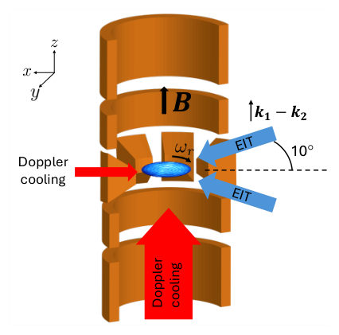
<figcaption class="paper-figure-caption"><b>Fig 1.</b> FIG. 1: The NIST Penning trap is illustrated, with Doppler and EIT laser cooling beams shown by red and blue arrows, respectively. Voltages applied to the four cylindrically symmetric electrodes produce axial confine- ment of 9Be+ ions. The axial frequency of the trap is ωz = 2π × 1.59 MHz. Radial confinement is caused by the presence of a strong axial magnetic field B = Bz ˆz, where Bz = 4.4588 T. A periodic time-dependent poten- tial with frequency ωr applied to the central electrodes produces a rotating-wall force on the ion crystal which stabilizes its rotation frequency. The ions are first cooled using two Doppler beams, which provide planar and axial cooling, respectively. Next, two...</figcaption>
</figure>
<figure class="paper-figure-card">
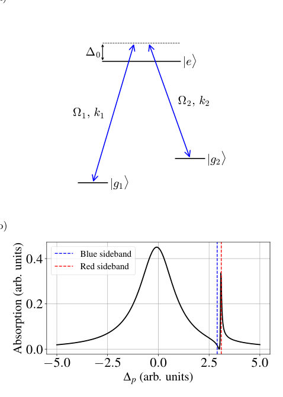
<figcaption class="paper-figure-caption"><b>Fig 2.</b> FIG. 2: (a) Level structure utilized in EIT cooling. Two cooling lasers couple ground states |g1⟩and |g2⟩to an excited state |e⟩. The lasers are both blue-detuned from their respective transition frequencies, and are described by Rabi frequencies Ω1(2) and wavevectors ⃗k1(2). (b) The absorption spectrum of a weak probe is similar to a Fano profile, an example of which is plotted. The spectrum includes a zero when the probe detuning is equal to the cooling beam detuning (∆p = ∆0), followed by a nar- row peak at positive ∆p. When the motion-removing sideband transition associated with the crystal’s normal modes (denoted by a red, dashed vertical line) is located within the bandwidth of this...</figcaption>
</figure>
<figure class="paper-figure-card">
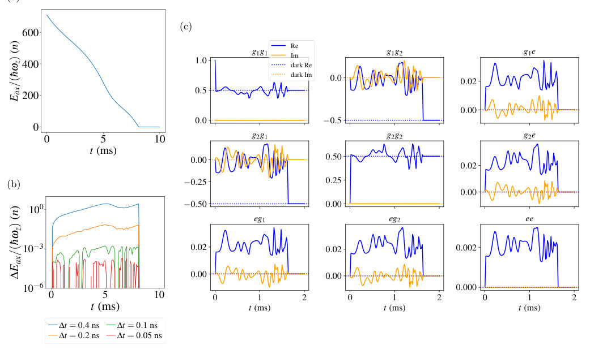
<figcaption class="paper-figure-caption"><b>Fig 3.</b> FIG. 3: (a) The axial energy of a single trapped ion during cooling. The ion is initialized at the center of the trap with an axial velocity of 10 m/s (the thermal velocity corresponding to approximately 108 mK). Since our semiclassical model does not include momentum diffusion, the energy approaches zero, which is not physical. Most trap and laser parameters can be found in Table I. This simulation uses no rotating wall (i.e., δ = 0) and the laser beam widths are assumed to be infinite. The ion begins in state |g1⟩and the simulation time step is ∆t = 0.1 ns. (b) To test convergence with respect to the time step, we repeat the simulation with different values of ∆t. The energy difference...</figcaption>
</figure>
<figure class="paper-figure-card">
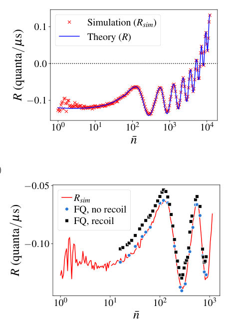
<figcaption class="paper-figure-caption"><b>Fig 4.</b> FIG. 4: (a) The cooling rate of the axial COM mode for a single trapped ion, in the semiclassical approximation, is plotted as a function of occupation number. Most trap and laser beam parameters are given in Table I. In these simulations there is no rotating-wall potential and we use w1 = w2 = ∞. The theoretical values are computed us- ing the dynamic steady-state approach from [38]. Good agreement is observed between the simulated and theo- retical semiclassical cooling rates. For ¯n ≤10, the sim- ulated cooling rate is harder to estimate since the ion’s motion is cooled to near ¯n = 0 very quickly. The capture range of this cooling setup is several thousand motional quanta. (b) The FQ...</figcaption>
</figure>
<figure class="paper-figure-card">
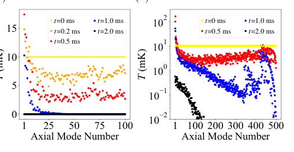
<figcaption class="paper-figure-caption"><b>Fig 5.</b> FIG. 6: (a) The temperature of each axial mode in an N = 100 planar crystal is shown at several times during cooling. The plotted mode temperatures are averaged over 20 realizations of the simulation. At t = 0, all axial modes are initialized at T ∥ i = 10 mK. Resonant mode coupling asymmetrically transfers energy to the lowest- frequency modes, causing them to heat initially before cooling. (b) The analogous plot for the N = 500 ion crys- tal. In this case, the initial heating of the low-frequency modes is more pronounced (note the logarithmic scale of the vertical axis). For clarity, temperatures less than 0.1 mK are not shown.</figcaption>
</figure>
</div>

<p><strong>Summary.</strong> This paper introduces a novel semiclassical molecular dynamics code to simulate Electromagnetically Induced Transparency (EIT) cooling in trapped-ion crystals. By coupling classical ion motion with internal quantum state evolution, the authors successfully model cooling in complex 2D and 3D geometries. This framework is a powerful tool for optimizing future quantum sensing and quantum information protocols.</p>
<p><strong>Why it may be interesting.</strong> This work provides a powerful, advanced numerical tool for modeling sub-Doppler cooling techniques in complex, multi-ion quantum systems, directly impacting the feasibility of quantum sensing and quantum information experiments.</p>
<details>
<summary>Detailed structure</summary>
<p><strong>Main problem.</strong> To develop and apply a semiclassical molecular dynamics simulation tool capable of modeling Electromagnetically Induced Transparency (EIT) cooling in ion crystals, extending beyond existing codes limited to Doppler cooling.</p>
<p><strong>Main result.</strong> The framework successfully models efficient EIT cooling of axial modes in large 3D ion crystals, demonstrating that the mode spectra can be engineered to enable sympathetic cooling of low-frequency E x B modes.</p>
<p><strong>Method.</strong> The authors implemented a novel semiclassical MD code that simultaneously evolves the ions' classical motion and their internal quantum states, allowing for the calculation of instantaneous EIT laser forces.</p>
<p><strong>Model / system.</strong> The system involves trapped-ion crystals (2D and 3D) confined in a Penning trap. The cooling mechanism relies on EIT, which utilizes a $\Lambda$ level configuration, and the dynamics are governed by coupled classical equations of motion and quantum master equations.</p>
<p><strong>Key observables.</strong> Instantaneous EIT laser forces, cooling rates, and the mode spectra of 3D crystals.</p>
<p><strong>Important parameters / regimes.</strong> The simulation handles up to 500 ions, and the analysis focuses on sub-Doppler cooling regimes.</p>
<p><strong>Assumptions / limitations.</strong> The model uses a semiclassical approximation, which is noted to be less accurate when spontaneous emission recoil becomes significant.</p>
<p><strong>Figures summary.</strong> Figures illustrate the Penning trap setup with both Doppler and EIT beams, the $\Lambda$ level structure for EIT, and show the cooling dynamics and mode spectra for 2D and 3D crystals.</p>
<p><strong>Paper structure.</strong> The paper first introduces the need for the new MD code, validates it by comparing single-ion cooling rates to quantum results, analyzes planar (2D) crystal cooling, and culminates in demonstrating efficient EIT cooling and mode engineering in 3D ellipsoidal crystals.</p>
</details>
<details>
<summary>Abstract</summary>
<p>Motional modes of trapped-ion crystals in Penning traps can now be cooled to near their ground states via electromagnetically induced transparency (EIT) cooling. Numerical simulations are valuable tools for interpreting EIT cooling results and optimizing experimental protocols, but existing molecular dynamics codes are limited to the simulation of Doppler cooling. In this work, we fill this gap by implementing a semiclassical model of EIT cooling in a novel MD code. By simultaneously evolving the ions' internal quantum states and classical motion, we are able to calculate the instantaneous EIT laser forces acting on the ions. We first validate our code by comparing the single-ion cooling rate to fully quantum simulation results. Next, we analyze cooling of the drumhead modes in planar ion crystals, quantifying the effects of planar ion motion and a finite laser beam width. Finally, we demonstrate efficient EIT cooling of the axial modes in 3D ellipsoidal crystals containing up to 500 ions. Such crystals are a promising platform for future quantum sensing experiments with enhanced sensitivity. We find that the mode spectra of 3D crystals can be engineered to enable sympathetic cooling of the low-frequency $\boldsymbol{E}\times\boldsymbol{B}$ modes. This numerical framework provides a powerful tool for modeling sub-Doppler cooling techniques and for optimizing future quantum sensing and quantum information experiments.</p>
</details>
<p><sub><a href="#top">↑ back to top</a></sub></p>

<p><a id="paper-2610.29860"></a></p>
<h3 id="charge-density-wave-transient-states-induced-by-ultrashort-hard-x-ray-pulses"><a href="http://arxiv.org/abs/2610.29860v1">Charge Density Wave transient states induced by ultrashort hard X-ray pulses</a></h3>
<p><strong>Authors:</strong> D. Ghoneim, E. Bellec, L. Ortega, V. L. R. Jacques, A. A Sinchenko, P. Wzietek, U. Boesenberg, K. Kazarian, J. Moeller, J. D. Moore, A. Rodriguez-Fernandez, R. Shayduk, A. Zozulya, A. Madsen, D. Le Bolloc'h<br>
<strong>Type:</strong> experiment · <strong>Category:</strong> strongly correlated electrons · <strong>PDF:</strong> <a href="https://arxiv.org/pdf/2610.29860v1">https://arxiv.org/pdf/2610.29860v1</a><br>
<strong>Analysis basis:</strong> full PDF text, analyzed in chunks
<strong>Topic relevance:</strong> 🔥 <code>non-equilibrium universality</code> <strong>4/5</strong> · <code>Frenkel-Kontorova</code> <strong>3/5</strong> · <code>driven-dissipative phase transition</code> <strong>3/5</strong> · <code>Keldysh / 2PI / non-Gaussian methods</code> <strong>2/5</strong> · <code>methods for driven-dissipative</code> <strong>2/5</strong> · <code>scars &amp; prethermalization</code> <strong>2/5</strong> · <code>correlated / nonlocal dissipation</code> <strong>1/5</strong> · <code>quantum measurements</code> <strong>1/5</strong></p>
<div class="figure-strip-hint">↔ Scroll figures horizontally</div>
<div class="paper-figures-scroll">
<figure class="paper-figure-card">
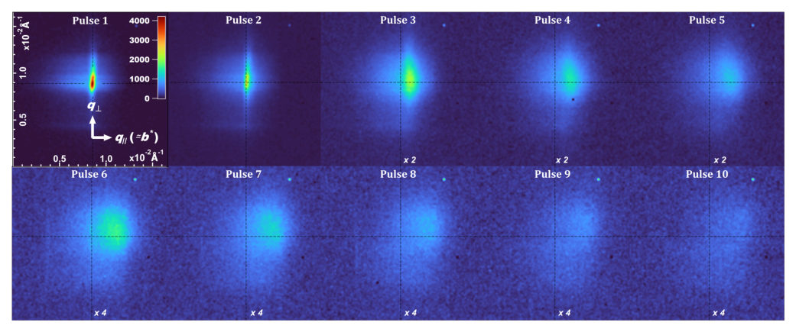
<figcaption class="paper-figure-caption"><b>Fig 1.</b> FIG. 1. QCDW Q(0 1.24 0) satellite reflection associated to the CDW in NbSe3 versus pulse number within a train of pulses. The process is reproducible from one train to the next. Each image corresponds of the sum over the rocking curve and have been averaged over 6000 trains. The intensity range has been rescaled for each pulse for better visibility (indicated in white on each image). The image size is 128*128 pixels of 200µm*200µm size (AGIPD detector) with 1.3 10−4A−1 per pixel in horizontal and 1.3 10−4A−1 in vertical. The intensity is multiply by either 2 or 4 for a better visibility as indicated on each diffraction pattern.</figcaption>
</figure>
<figure class="paper-figure-card">
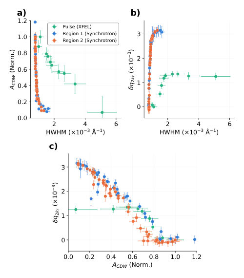
<figcaption class="paper-figure-caption"><b>Fig 2.</b> FIG. 3. a-c): Correlations between the three CDW order pa- rameters shown in Fig.2. a) ACDW versus the HWHM. b) The 2kF shift δqCDW versus the HWHM. c) δqCDW versus ACDW . Error bars are propagated from each quantity’s fit uncertainty. As in Fig.2, blue and orange dots are the syn- chrotron measurements as a function of temperature (on the two sample regions), and green dots are the XFEL data as a function of pump-pulse number.</figcaption>
</figure>
<figure class="paper-figure-card">
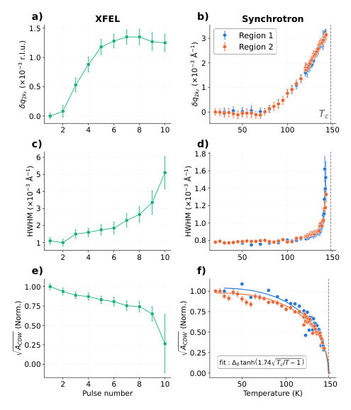
<figcaption class="paper-figure-caption"><b>Fig 3.</b> FIG. 2. (a, c, e) XFEL Pulse-number dependence of the CDW satellite shift δqCDW along the longitudinal direction (≈b), the HWHM, and the square root of the CDW amplitude √</figcaption>
</figure>
</div>

<p><strong>Summary.</strong> This work uses hard X-ray pump-probe techniques to study how Charge Density Wave (CDW) materials respond to extreme, non-equilibrium excitation. The findings reveal a unique, non-thermal dynamic pathway characterized by changes in the CDW order parameters over long timescales. This suggests that X-rays can drive the system into exotic states potentially involving charged topological defects.</p>
<p><strong>Why it may be interesting.</strong> The study probes non-equilibrium many-body dynamics in a strongly correlated electronic state (CDW), which is highly relevant to understanding ultrafast energy dissipation and charge transport in correlated materials.</p>
<details>
<summary>Detailed structure</summary>
<p><strong>Main problem.</strong> The study investigates the transient, non-equilibrium states induced in Charge Density Wave (CDW) systems when excited by ultrashort hard X-ray pulses, contrasting this with infrared laser excitation.</p>
<p><strong>Main result.</strong> X-ray pumping drives the CDW system into a novel, reversible out-of-equilibrium state characterized by a non-thermal kinetic path, involving changes in the CDW wavevector, correlation lengths, and electronic gap over long recovery times.</p>
<p><strong>Method.</strong> The research employs X-ray pump-probe experiments using hard X-ray beams (XFEL source) to probe the material dynamics, comparing results obtained from pulse number dependence versus temperature dependence.</p>
<p><strong>Model / system.</strong> The physical system is a CDW material, specifically $   ext{NbSe}_3$. The dynamics are analyzed by tracking changes in the CDW order parameters, suggesting the formation of charged topological objects like solitons.</p>
<p><strong>Key observables.</strong> CDW wavevector ($2k_F$), correlation lengths ($\xi$), electronic gap ($\Delta$), and the satellite reflection intensity/width ($   ext{HWHM}$).</p>
<p><strong>Important parameters / regimes.</strong> X-ray pulse energy (6000 times more energetic than laser pulses), long recovery time ($450	ext{ns}$ to $0.01	ext{s}$), and temperature ($T$ vs. pulse number).</p>
<p><strong>Assumptions / limitations.</strong> The non-thermal nature of the excitation is confirmed by observing limited deviation in the main Bragg peak, suggesting the dynamics are not dominated by simple thermal heating.</p>
<p><strong>Figures summary.</strong> Figures compare the evolution of CDW order parameters ($   ext{ACDW}$, $\delta q_{	ext{CDW}}$, $    ext{HWHM}$) as a function of XFEL pulse number (green dots) versus temperature (blue/orange dots), highlighting the distinct non-thermal response.</p>
<p><strong>Paper structure.</strong> The paper establishes the problem by contrasting X-ray vs. laser excitation, presents experimental diagnostics using XFEL/Synchrotron sources, details the observation of non-thermal kinetic paths, and proposes theoretical scenarios involving soliton doping to explain the observed changes in CDW order parameters.</p>
</details>
<details>
<summary>Abstract</summary>
<p>The interaction of quantum systems with ultrashort laser pulses may lead to transient states far from equilibrium. Among these, Charge Density Wave (CDW) systems offer very rich non-equilibrium physics when submitted to ultrashort optical excitations in the infrared regime. In this Letter, we show that CDW systems pumped by ultrashort x-ray pulses excite the system in very different way. The x-ray pump, 6000 times more energetic than a laser pulse, pumping and probing the whole bulk system simultaneously, drives CDW systems in a novel reversible out of equilibrium state. The successive CDW states observed in the NbSe$_3$ system with respect to the arrival of x-ray pulses follow a non-thermal kinetic path. It is characterized by a change in 2k$_F$ wavevector, correlation lengths and electronic gap, as well as a change of dimensionality, all of this takes place within a very long recovery time ranging from 450$ns$ to 0.01$s$. Several scenarios are proposed, including transient nucleation and recombination of charged topological objects.</p>
</details>
<p><sub><a href="#top">↑ back to top</a></sub></p>

<p><a id="paper-2610.29372"></a></p>
<h3 id="quantum-simulation-of-non-markovian-open-quantum-systems-via-low-rank-kernel-compression-and-coupling-dilution"><a href="http://arxiv.org/abs/2610.29372v1">Quantum Simulation of Non-Markovian Open Quantum Systems via Low-Rank Kernel Compression and Coupling Dilution</a></h3>
<p><strong>Authors:</strong> Hengzhun Chen, Zhenning Cai<br>
<strong>Type:</strong> theory · <strong>Category:</strong> other · <strong>PDF:</strong> <a href="https://arxiv.org/pdf/2610.29372v1">https://arxiv.org/pdf/2610.29372v1</a><br>
<strong>Analysis basis:</strong> full PDF text, analyzed in chunks
<strong>Topic relevance:</strong> 🔥 <code>methods for driven-dissipative</code> <strong>4/5</strong> · <code>Keldysh / 2PI / non-Gaussian methods</code> <strong>3/5</strong> · <code>correlated / nonlocal dissipation</code> <strong>3/5</strong> · <code>driven-dissipative phase transition</code> <strong>3/5</strong> · <code>non-equilibrium universality</code> <strong>2/5</strong> · <code>analog quantum simulation</code> <strong>1/5</strong> · <code>quantum measurements</code> <strong>1/5</strong></p>
<div class="figure-strip-hint">↔ Scroll figures horizontally</div>
<div class="paper-figures-scroll">
<figure class="paper-figure-card">
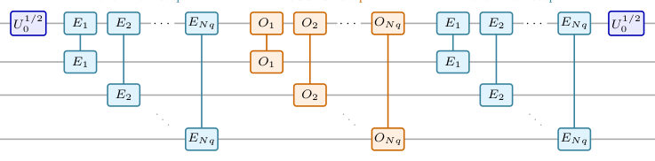
<figcaption class="paper-figure-caption"><b>Fig 1.</b> Figure 1: Circuit of one midpoint–Strang step Wk, read from left to right. Each bath wire represents a register encoding one finite-level mode. Registers 1, 2, and Nq are shown, with intermediate registers omitted; the single index is ℓ= (n −1)q + r. Each connected pair of boxes denotes one joint operation on the system and the indicated bath register. The cyan Eℓblocks contain the even transitions for a half step, and the orange Oℓblocks contain the odd transitions for a full step. Blocks within each parity group commute, but share the system register, so parallel execution depends on the hardware architecture.</figcaption>
</figure>
</div>

<p><strong>Summary.</strong> This paper presents a rigorous, error-controlled method for simulating open quantum systems whose dynamics are non-Markovian. It achieves this by approximating the environment's influence using low-rank kernel compression and introducing 'coupling dilution' to handle large bosonic excitations within a qubit framework. The result establishes polynomial resource scaling for the simulation depth and width.</p>
<p><strong>Why it may be interesting.</strong> This work provides a concrete, resource-aware quantum algorithm for simulating complex, non-Markovian dynamics, which is a major frontier in quantum simulation for AMO physics.</p>
<details>
<summary>Detailed structure</summary>
<p><strong>Main problem.</strong> The paper addresses the challenge of quantum simulating the dynamics of open quantum systems that exhibit non-Markovian behavior.</p>
<p><strong>Main result.</strong> They establish an error-controlled framework that achieves polynomial circuit width and depth for the simulation, provided certain spectral and coupling regularity assumptions hold.</p>
<p><strong>Method.</strong> The core method involves replacing the complex environment interaction with an effective bath constructed via low-rank kernel compression and employing 'coupling dilution' to manage high excitation numbers in qubit encoding.</p>
<p><strong>Model / system.</strong> The system is a quantum system coupled linearly to a Gaussian environment (bath). The dynamics are governed by the bath's two-time correlation kernel, which dictates the reduced dynamics.</p>
<p><strong>Key observables.</strong> Reduced-state error bounds ($\lVert 
ho_s(T) - 
ho_{approx}(T) 
Vert_{	ext{tr}}$), circuit width, and circuit depth.</p>
<p><strong>Important parameters / regimes.</strong> Simulation time ($T$), inverse accuracy ($\epsilon$), rank of approximation ($N$), and the number of dilution copies ($q$).</p>
<p><strong>Assumptions / limitations.</strong> The bath is Gaussian, the coupling is linear, and the simulation is restricted to a finite time interval. Key assumptions include spectral-decay and coupling-regularity for error bounds.</p>
<p><strong>Paper structure.</strong> The paper builds from establishing the Gaussian bath equivalence principle via the correlation kernel, to constructing the finite-rank effective bath using spectral decomposition, addressing the excitation limitation via coupling dilution, and finally deriving resource bounds for qubit implementation.</p>
</details>
<details>
<summary>Abstract</summary>
<p>We present an error-controlled framework for the quantum simulation of non-Markovian open-system dynamics in Gaussian environments. For a system coupled linearly to a Gaussian environment with zero mean, the bath's influence on the reduced dynamics is completely determined by its two-time correlation kernel. This allows us to replace the microscopic environment with an equivalent bath that has the same kernel. On a finite simulation interval, a rank-$N$ approximation of the kernel yields an effective bath of $N$ bosonic modes with time-dependent couplings to the system. To encode these modes in qubits, we first truncate each mode to its lowest $d$ occupation levels. When stronger couplings lead to large occupations, we introduce coupling dilution, which replaces each mode with several more weakly coupled copies while preserving the bath correlation kernel. This distributes excitations across more modes and trades additional modes for smaller local dimensions. We derive explicit reduced-state error bounds and establish polynomial circuit width and depth in simulation time and inverse accuracy under stated spectral-decay and coupling-regularity assumptions, provided elementary unitaries admit polynomial-cost implementations.</p>
</details>
<p><sub><a href="#top">↑ back to top</a></sub></p>

<p><a id="paper-2610.29547"></a></p>
<h3 id="splitting-probability-in-monitored-quantum-dynamics"><a href="http://arxiv.org/abs/2610.29547v1">Splitting Probability in Monitored Quantum Dynamics</a></h3>
<p><strong>Authors:</strong> Prashant Singh, Sabine Tornow, David A Kessler, Eli Barkai<br>
<strong>Type:</strong> theory · <strong>Category:</strong> statistical mechanics · <strong>PDF:</strong> <a href="https://arxiv.org/pdf/2610.29547v1">https://arxiv.org/pdf/2610.29547v1</a><br>
<strong>Analysis basis:</strong> full PDF text, analyzed in chunks
<strong>Topic relevance:</strong> 🔥 <code>quantum measurements</code> <strong>4/5</strong> · <code>methods for driven-dissipative</code> <strong>2/5</strong> · <code>Full counting statistics</code> <strong>1/5</strong> · <code>Keldysh / 2PI / non-Gaussian methods</code> <strong>1/5</strong> · <code>analog quantum simulation</code> <strong>1/5</strong> · <code>correlated / nonlocal dissipation</code> <strong>1/5</strong> · <code>driven-dissipative phase transition</code> <strong>1/5</strong> · <code>non-equilibrium universality</code> <strong>1/5</strong></p>
<div class="figure-strip-hint">↔ Scroll figures horizontally</div>
<div class="paper-figures-scroll">
<figure class="paper-figure-card">
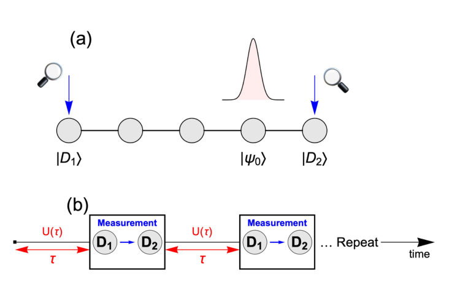
<figcaption class="paper-figure-caption"><b>Fig 1.</b> FIG. 1. Panel (a) shows a chain of size N = 5 in which a system with |ψ0⟩= |4⟩(see the pink shaded region) evolves with the nearest-neighbor hopping Hamiltonian in Eq. (2). After every time interval τ, projective measurements are performed at |D1⟩= |1⟩and |D2⟩= |N⟩to check the system at these states. Panel (b) illustrates the splitting probability detection protocol. During the first τ interval, the system evolves unitarily with the operator U(τ) in Eq. (3). After this evolution, a projective measurement |D1⟩⟨D1| is performed at the first target state. If this detection is successful, the process terminates. If not, then the state of the system is projected onto the subspace complementary...</figcaption>
</figure>
<figure class="paper-figure-card">
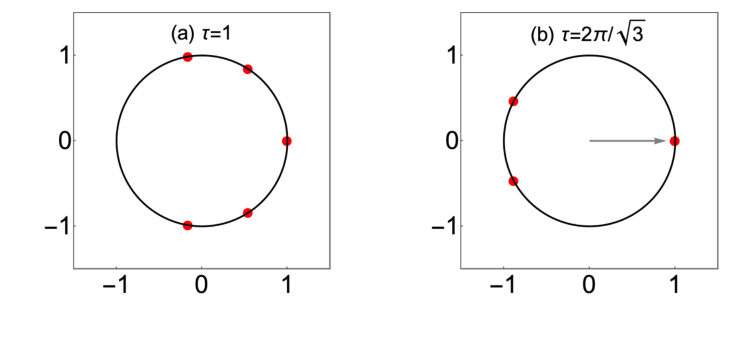
<figcaption class="paper-figure-caption"><b>Fig 2.</b> FIG. 2. The nearest-neighbor hopping Hamiltonian in Eq. (54), with N = 5, has five eigenvlaues given in Eq. (55), namely {E1 = − √</figcaption>
</figure>
<figure class="paper-figure-card">
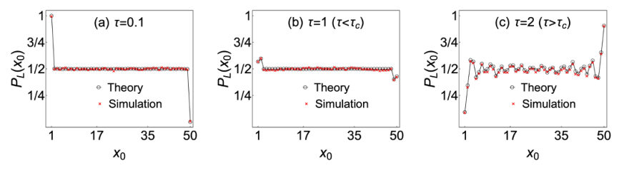
<figcaption class="paper-figure-caption"><b>Fig 3.</b> FIG. 3. Splitting probability PL(x0) as a function of the initial position x0 for the nearest-neighbor tight-binding chain of size N = 50 in Eq. (2). Panel (a) shows the theoretical prediction for the Zeno limit in Eq. (68) together with numerical simulations for γ = 1 and τ = 0.1; see Appendix B for details on the numerical simulations. Panels (b,c) display simulation data of PL(x0) for τ = 1 and τ = 2, respectively, compared with the theoretical expression in Eq. (61). These values of the sampling time are chosen such that they lie below and above the critical value γτc = π/2 (≈1.57). As evident, PL(x0) for τ = 0.1 and τ = 1 remains essentially flat and equal to 1/2, except close to the...</figcaption>
</figure>
<figure class="paper-figure-card">
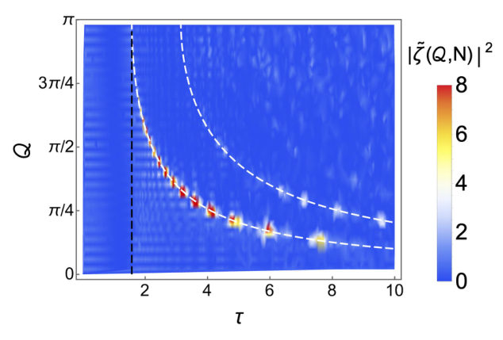
<figcaption class="paper-figure-caption"><b>Fig 4.</b> FIG. 4. Heat map of the power spectrum eζ(Q, N) 2 for the nearest-neighbor hopping Hamiltonian, shown as a function of</figcaption>
</figure>
<figure class="paper-figure-card">
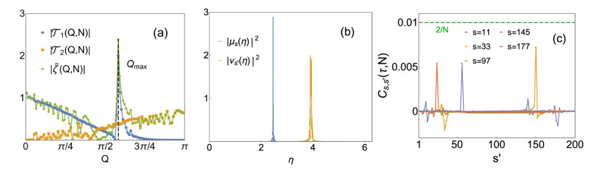
<figcaption class="paper-figure-caption"><b>Fig 5.</b> FIG. 5. (a) The absolute value of the Fourier transform eζ(Q, N) in Eq. (76) is plotted as a function of Q = πj/(N + 1) for odd j, N = 200, γ = 1, and τ = 2, along with the two terms |T1(Q, N)| and |T2(Q, N)| in Eqs. (78) and (79). The maximum of |eζ(Q, N)| occurs at the same Q-value as the maximum of |T1(Q, N)|; denoted by Qmax(τ)(≈1.81) and depicted by the dashed line. We show in Eq. (86) that for large N, Qmax(τ) = 2 sin−1 (πr/2γτ), where r is a positive integer. (b) The functions |µs(η)|2</figcaption>
</figure>
</div>

<p><strong>Summary.</strong> This paper develops a renewal framework to calculate splitting probabilities for quantum walks monitored by projective measurements at two targets. It reveals a critical sampling time $\tau_c$ that separates a regime of uniform probability ($1/2$) from a regime exhibiting position-dependent oscillations. The findings provide deep insights into measurement-induced dynamics and ergodicity breaking in quantum systems.</p>
<p><strong>Why it may be interesting.</strong> This work directly addresses open quantum systems and measurement backaction, providing quantitative predictions for how monitoring affects quantum transport and localization phenomena, which is highly relevant to AMO physics.</p>
<details>
<summary>Detailed structure</summary>
<p><strong>Main problem.</strong> The paper investigates the quantum analogue of the splitting probability, which quantifies the likelihood of a quantum trajectory reaching one target state before others under continuous monitoring.</p>
<p><strong>Main result.</strong> The system exhibits a nonanalytic transition at a critical sampling time $\tau_c$, below which splitting probabilities approach $1/2$ and above which they develop oscillations dependent on the initial position.</p>
<p><strong>Method.</strong> The authors construct a general renewal framework for the first-detection amplitude, utilizing generating functions and analyzing the problem via a quantum mapping for reflection-symmetric Hamiltonians.</p>
<p><strong>Model / system.</strong> The model is a continuous-time quantum walk on a one-dimensional lattice chain subjected to projective measurements at two distinct target sites at regular intervals $\tau$. The dynamics are governed by a time-independent, Hermitian Hamiltonian, exemplified by nearest-neighbor hopping.</p>
<p><strong>Key observables.</strong> Splitting probabilities ($P_L, P_R$), first-detection amplitudes, and oscillations in these probabilities as a function of initial position.</p>
<p><strong>Important parameters / regimes.</strong> Sampling time ($\tau$), critical sampling time ($\tau_c = 2\pi/\Delta E$), and the initial position ($x_0$).</p>
<p><strong>Assumptions / limitations.</strong> The analysis assumes a general renewal framework and extends to finite measurement sequences, which modifies the resonance features.</p>
<p><strong>Figures summary.</strong> Figure 1(a) illustrates the setup on a small lattice ($N=5$) with measurements at endpoints. Figure 1(b) details the sequential measurement protocol involving unitary evolution and projections.</p>
<p><strong>Paper structure.</strong> The paper develops the formalism by first establishing the renewal theory for the first-detection amplitude, deriving a quantum mapping for the dual-target problem, and then analyzing the resulting behavior in different sampling time regimes.</p>
</details>
<details>
<summary>Abstract</summary>
<p>We consider a continuous-time quantum walk stroboscopically subjected to projective measurements on two distinct targets with sampling time period $τ$. We construct a general renewal framework for the first-detection amplitude at each target, from which we obtain the associated splitting probabilities. For Hamiltonians with reflection symmetry, we further show that each dual-target first-detection amplitude can be viewed as an interference effect between a pair of single-target first-detection amplitudes. This formulation yields exact expressions for the splitting probabilities and gives special sampling times at which they undergo pointwise discontinuous jumps due to a form of ergodicity breaking associated with dark states. As an illustrative example, we apply the framework to a one-dimensional tight-binding lattice chain with nearest-neighbor hopping, and study the splitting probabilities as functions of the initial position and sampling time. Below a critical sampling time, $0<τ< τ_c$ where $τ_c = 2 π/ ΔE$ with $ΔE$ being the energy bandwidth, the splitting probabilities for large system sizes become equal to $1/2$, independent of the initial position, as long as this position does not coincide with target sites. Above the critical sampling time, $τ\geq τ_c$, the splitting probabilities deviate from $1/2$ and develop oscillations as a function of initial position. The wavenumber associated with these oscillations is $Q=2\sin^{-1}(rτ_c/τ)$, where $r$ is a positive integer. We also explore the effects of relative phase and spatial separation between different components of a coherent initial state on the splitting probabilities. Finally, we study how a finite number of measurements modifies the splitting probabilities and broadens the resonances at special sampling times.</p>
</details>
<p><sub><a href="#top">↑ back to top</a></sub></p>

<p><a id="paper-2610.30002"></a></p>
<h3 id="two-particle-interference-the-hanbury-brown-twiss-and-hong-ou-mandel-experiments"><a href="http://arxiv.org/abs/2610.30002v1">Two particle interference: The Hanbury Brown Twiss and Hong Ou Mandel experiments</a></h3>
<p><strong>Authors:</strong> Christoph I Westbrook<br>
<strong>Type:</strong> theory · <strong>Category:</strong> other · <strong>PDF:</strong> <a href="https://arxiv.org/pdf/2610.30002v1">https://arxiv.org/pdf/2610.30002v1</a><br>
<strong>Analysis basis:</strong> full PDF text, analyzed in chunks
<strong>Topic relevance:</strong> 🔥 <code>interference shaping light</code> <strong>4/5</strong> · <code>analog quantum simulation</code> <strong>3/5</strong> · <code>quantum optics experiment</code> <strong>3/5</strong> · <code>Full counting statistics</code> <strong>1/5</strong> · <code>Keldysh / 2PI / non-Gaussian methods</code> <strong>1/5</strong></p>
<div class="figure-strip-hint">↔ Scroll figures horizontally</div>
<div class="paper-figures-scroll">
<figure class="paper-figure-card">
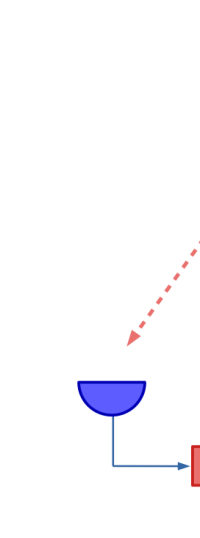
<figcaption class="paper-figure-caption"><b>Fig 1.</b> Figure 1: Essential elements of an intensity interferometer. Two receivers shown as semi-circles, convert incoming radiation from a distant object into electrical currents and an electronic circuit, shown as a red square, multiplies the two currents and averages them over some time. At small detector sep- arations, the current fluctuations are correlated, but this correlation decays with increasing separation of the detectors. The characteristic distance of this decay allows one to measure the angular size of the source.</figcaption>
</figure>
<figure class="paper-figure-card">
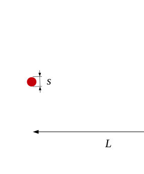
<figcaption class="paper-figure-caption"><b>Fig 2.</b> Figure 2: Basic configuration of a stellar interferometer. A source of size s emits light which passes through two slits. A sufficiently small source produces fringes at the detection plane. The maximum distance d for which fringes are still visible yields an estimate for the source size. In the Michelson and Pease experiment the slits corresponded to mirrors which reflected the light towards a telescope mirror which in turn focused the light on an eyepiece.</figcaption>
</figure>
<figure class="paper-figure-card">
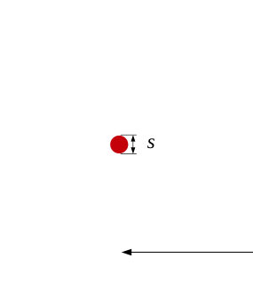
<figcaption class="paper-figure-caption"><b>Fig 3.</b> Figure 3: Diagram showing the speckle at a detection plane produced by an extended light source of size s. The characteristic size of the speckles allows one to measure the angular size of the source.</figcaption>
</figure>
<figure class="paper-figure-card">
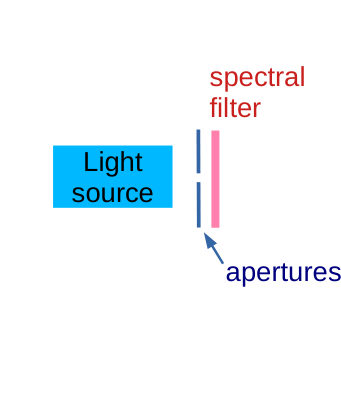
<figcaption class="paper-figure-caption"><b>Fig 4.</b> Figure 4: Diagram of the Hanbury Brown and Twiss laboratory experiment. The image of one detector is superposed with the other. The detector and its aperture are then moved to vary the spatial separation.</figcaption>
</figure>
<figure class="paper-figure-card">
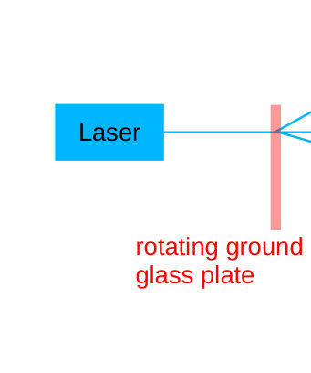
<figcaption class="paper-figure-caption"><b>Fig 5.</b> Figure 5: Experiment to illustrate the difference between a laser and a thermal source. Two configurations are used. In the first, a weak laser beam directly illuminates the detector. In the second, a rotating, ground glass screen is placed in the laser beam, scattering the light in a random fashion creating a speckle pattern. The motion of the screen causes the speckle pattern to fluctuate. The detector then records the photon arrival times. The rate for detecting pairs of photons as a function of their temporal separation is shown in Fig. 6.</figcaption>
</figure>
</div>

<p><strong>Summary.</strong> This paper reviews the physics of two-particle interference using seminal experiments like HBT and HOM. It develops the theoretical framework for measuring intensity correlations, showing how these measurements distinguish between quantum and classical light sources. The work is significant for its broad scope, connecting photon optics to atomic and fermionic quantum interference phenomena.</p>
<p><strong>Why it may be interesting.</strong> This review is highly relevant as it bridges foundational quantum optics (photon correlations) with modern AMO techniques (atomic interference), providing a unified theoretical framework for studying quantum coherence in diverse physical systems.</p>
<details>
<summary>Detailed structure</summary>
<p><strong>Main problem.</strong> The paper provides a pedagogical overview comparing two quantum optics experiments—Hanbury Brown Twiss (HBT) and Hong Ou Mandel (HOM)—to demonstrate the fundamental relationship between two-particle interference effects.</p>
<p><strong>Main result.</strong> The analysis shows that these experiments quantify light intensity correlations, revealing key differences between quantum states (e.g., antibunching in single-photon sources) and classical expectations.</p>
<p><strong>Method.</strong> The methodology involves deriving and analyzing the second-order correlation function, G^(2), using quantum field theory formalism and applying theorems like Isserlis' theorem.</p>
<p><strong>Model / system.</strong> The study covers various physical platforms, including photons in optical interferometers, and extends the concepts to atomic systems (metastable helium atoms) and fermionic gases (trapped Li atoms).</p>
<p><strong>Key observables.</strong> The primary observables are the second-order correlation function, G^(2)(d, tau), and the visibility/contrast of the interference dip/peak.</p>
<p><strong>Important parameters / regimes.</strong> Key parameters include the separation distance (d), time delay (tau), and the source size (s) relative to the observation length (L).</p>
<p><strong>Assumptions / limitations.</strong> Assumptions include the stationary nature of the source fields and the applicability of quantum field quantization methods.</p>
<p><strong>Figures summary.</strong> Figures illustrate the setups for intensity interferometry (HBT), stellar interferometry, and the specific laboratory configurations for the HOM effect using both photons and trapped atoms.</p>
<p><strong>Paper structure.</strong> The paper progresses by first establishing the classical and quantum foundations of intensity interferometry (HBT/Stellar Interferometry), then deriving the general correlation function G^(2), and finally applying these concepts to modern quantum systems like atoms and fermions (HOM effect).</p>
</details>
<details>
<summary>Abstract</summary>
<p>I discuss two important quantum optics experiments which depend on two particle interference. In the years since their first demonstration many interesting and instructive variants have appeared, including the use of atoms instead of photons as the interfering particles. This chapter gives a pedagogical overview of some of these results and argues that the two effects are closely related.</p>
</details>
<p><sub><a href="#top">↑ back to top</a></sub></p>

<p><a id="paper-2610.29931"></a></p>
<h3 id="two-stage-slowdown-of-vacancy-mediated-diffusion-in-a-lattice-gas-model-with-quenched-disorder-and-spins"><a href="http://arxiv.org/abs/2610.29931v1">Two-stage Slowdown of Vacancy-mediated Diffusion in a Lattice Gas Model with Quenched Disorder and Spins</a></h3>
<p><strong>Authors:</strong> Qiang Zhai<br>
<strong>Type:</strong> theory · <strong>Category:</strong> disordered systems and neural networks · <strong>PDF:</strong> <a href="https://arxiv.org/pdf/2610.29931v1">https://arxiv.org/pdf/2610.29931v1</a><br>
<strong>Analysis basis:</strong> full PDF text, analyzed in chunks
<strong>Topic relevance:</strong> 🔥 <code>scars &amp; prethermalization</code> <strong>4/5</strong> · <code>non-equilibrium universality</code> <strong>3/5</strong> · <code>analog quantum simulation</code> <strong>2/5</strong> · <code>methods for driven-dissipative</code> <strong>2/5</strong></p>
<div class="figure-strip-hint">↔ Scroll figures horizontally</div>
<div class="paper-figures-scroll">
<figure class="paper-figure-card">
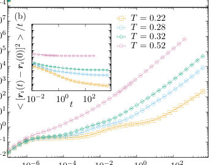
<figcaption class="paper-figure-caption"><b>Fig 1.</b> Figure 1. The ensemble averaged mean-squared displacement for particles (a) and vacancies (b).A two-stage slowdown is seen for both particles (filled symbols) and vacancies (hollow symbols). The inset of (a) and (b) displays the ratio of MSD and time. The lines are smooth polynomial fit, serving as guides to the eyes.</figcaption>
</figure>
<figure class="paper-figure-card">
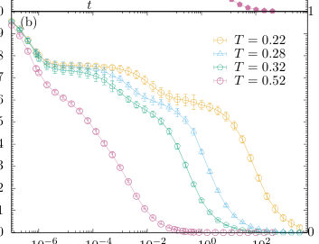
<figcaption class="paper-figure-caption"><b>Fig 2.</b> Figure 2. The spatial overlap q(t) for particles (a) and vacan- cies (b). Inset of (a) is a magnified portion of q(t) at the early stage of relaxation.</figcaption>
</figure>
<figure class="paper-figure-card">
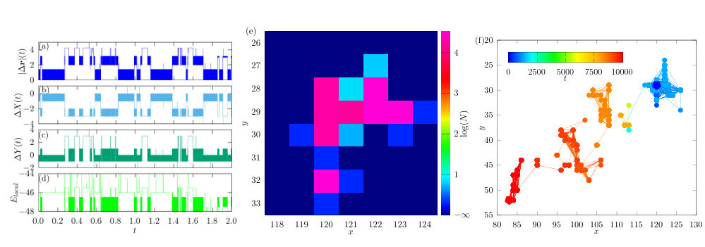
<figcaption class="paper-figure-caption"><b>Fig 3.</b> Figure 3. The typical motion of a vacancy at T = 0.22, with ∆r(t) in (a), ∆X(t) in (b) and ∆Y (t) in (c). The visiting numbers N of this vacancy to each lattice site from t = 0 to t = 2 are visualized in (e), the energy temporal evolution of the local region displayed in (e) is given in (d). Trajectories of this vacancy is plotted up to t = 10000 in (f).</figcaption>
</figure>
<figure class="paper-figure-card">
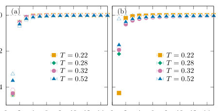
<figcaption class="paper-figure-caption"><b>Fig 4.</b> Figure 4. The displacement correlation C(kτ)/C(0) defined by Eq. (4) for (a) τ = 2 × 10−6 and (b) τ = 1. The solid symbols indicates the anti-correlation of particles, and the hollow symbol is for vacancies.</figcaption>
</figure>
<figure class="paper-figure-card">
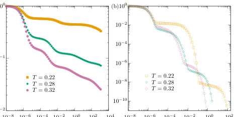
<figcaption class="paper-figure-caption"><b>Fig 5.</b> Figure 5. The survival function S(tw) for particles (a) and vacancies (b). The maximum waiting time tw of vacancies is less than 10% of the total measurement time. The solid lines are guide to the eyes.</figcaption>
</figure>
</div>

<p><strong>Summary.</strong> This work analyzes vacancy-mediated diffusion in a disordered lattice gas model, observing a characteristic two-stage slowdown in transport properties. This slowdown is linked to anti-correlations arising from sequential trapping and rare jumps within the disordered energy landscape. The findings provide a framework for understanding hierarchical dynamics in glassy systems.</p>
<p><strong>Why it may be interesting.</strong> The concept of hierarchical dynamics and slow relaxation in disordered systems is highly relevant to understanding glassy dynamics in many-body quantum systems, connecting classical lattice models to complex quantum relaxation phenomena.</p>
<details>
<summary>Detailed structure</summary>
<p><strong>Main problem.</strong> The study investigates the two-stage slowdown of vacancy-mediated diffusion in a lattice gas model subjected to quenched disorder and random spins.</p>
<p><strong>Main result.</strong> The diffusion exhibits a two-stage slowdown characterized by plateaus in MSD and spatial overlap, attributed to anti-correlations at specific length scales, suggesting hierarchical dynamics.</p>
<p><strong>Method.</strong> The study uses Monte Carlo simulations with Metropolis dynamics to track particle and vacancy movement in the disordered lattice gas.</p>
<p><strong>Model / system.</strong> The system is a lattice gas model on a 2D square lattice with quenched random interactions ($J_{ij}$) and quenched spins ($s_{p_i}$). Particle hopping occurs when a nearest neighbor is a vacancy.</p>
<p><strong>Key observables.</strong> Mean Squared Displacement (MSD), Spatial Overlap Function ($q(t)$), and Displacement Correlation Function ($C(k	au)$).</p>
<p><strong>Important parameters / regimes.</strong> Low temperatures (e.g., $T=0.22$), particle density ($
ho=0.99$), and various time/length scales ($   au$, $k$).</p>
<p><strong>Assumptions / limitations.</strong> The analysis assumes the system dynamics can be described by hopping rates derived from the Hamiltonian, and that the observed slowdown reflects underlying trapping mechanisms.</p>
<p><strong>Figures summary.</strong> Figures show the two-stage slowdown in MSD and spatial overlap for both particles and vacancies, and the correlation function $C(k	au)$ confirms anti-correlations at different time lags.</p>
<p><strong>Paper structure.</strong> The paper establishes the model and observables, presents evidence for the two-stage slowdown in MSD and $q(t)$, analyzes vacancy motion via trapping mechanisms (Type I and Type II), and concludes by discussing the implications for hierarchical dynamics.</p>
</details>
<details>
<summary>Abstract</summary>
<p>We present a lattice gas model with random interactions quenched in space and spins quenched to the particles. The vacancy-mediated diffusion is studied in equilibrium. A two-stage slowdown is witnessed in both the mean squared displacement and the spatial overlaps. We demonstrate that the plateaus are due to anti-correlation at the corresponding length scale. The anti-correlation diminishes quickly with increasing lag time. A broad and yet finite distribution of the survival function of vacancies suggests their normal diffusion at large time limit. Our model can serve as a new playground for understanding hierarchical dynamics in glassy-like dynamical systems.</p>
</details>
<p><sub><a href="#top">↑ back to top</a></sub></p>

<p><a id="paper-2610.30056"></a></p>
<h3 id="high-fidelity-and-robust-controlled-z-gates-for-superconducting-transmon-qubits-i-intrinsic-errors-and-decoherence"><a href="http://arxiv.org/abs/2610.30056v1">High-fidelity and robust controlled-Z gates for superconducting transmon qubits. I. Intrinsic errors and decoherence</a></h3>
<p><strong>Authors:</strong> Chia-Hsien Huang, Hsi-Sheng Goan<br>
<strong>Type:</strong> both · <strong>Category:</strong> quantum information and computing · <strong>PDF:</strong> <a href="https://arxiv.org/pdf/2610.30056v1">https://arxiv.org/pdf/2610.30056v1</a><br>
<strong>Analysis basis:</strong> full PDF text, analyzed in chunks
<strong>Topic relevance:</strong> 🔥 <code>QC/QI experiment</code> <strong>4/5</strong> · <code>methods for driven-dissipative</code> <strong>2/5</strong> · <code>correlated / nonlocal dissipation</code> <strong>1/5</strong> · <code>driven-dissipative phase transition</code> <strong>1/5</strong> · <code>quantum measurements</code> <strong>1/5</strong></p>
<div class="figure-strip-hint">↔ Scroll figures horizontally</div>
<div class="paper-figures-scroll">
<figure class="paper-figure-card">
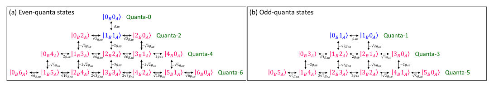
<figcaption class="paper-figure-caption"><b>Fig 1.</b> FIG. 1. Decoupled (a) even-quanta and (b) odd-quanta states. Leakage pathways from computational basis states (blue) to non- computational states (pink) are shown. States |nBmA⟩within each row share the same total number of quanta q = nB + mA, labeled as Quanta-q (green) at the end of the row. The coupling strength between two states is indicated in black near the double-arrow connecting them.</figcaption>
</figure>
<figure class="paper-figure-card">
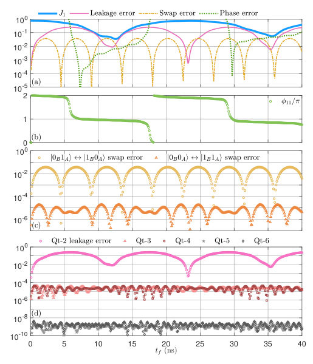
<figcaption class="paper-figure-caption"><b>Fig 2.</b> FIG. 2. Intrinsic CZ gate errors for the propagator evolved freely under the drift Hamiltonian HI with fixed ∆A/B at δA = 0. (a) The ideal CZ gate infidelity J1 (bold blue solid line) and its constituent intrinsic errors, including the leakage error (thin pink solid line), the swap error (yellow dash-dotted line), and the phase error (green dotted line), as functions of the gate time tf from 0 to 40 ns. (b) The phase error is attributed to the deviation of the local phase ϕ11 (green circles) from the target coupling ϕAB = π. (c) The swap error comprises the |0B1A⟩↔|1B0A⟩swap error (yellow circles) and the |0B0A⟩↔ |1B1A⟩swap error (orange triangles). (d) The leakage error includes the Qt-2...</figcaption>
</figure>
<figure class="paper-figure-card">
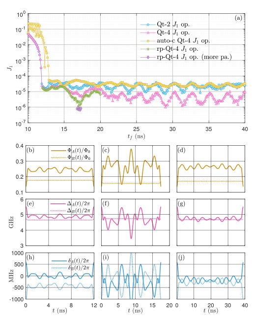
<figcaption class="paper-figure-caption"><b>Fig 3.</b> FIG. 3. Optimization results. (a) Optimized J1 as a function of gate time tf obtained from different optimization schemes: the Qt-2 J1 optimization (blue-circle line), the Qt-4 J1 op- timization (pink-triangle line), the auto-c Qt-4 J1 optimiza- tion (yellow-square line), the rp-Qt-4 J1 optimization (green- pentagram line), and the rp-Qt-4 J1 optimization with an in- creased number of control parameters in the Fine-Tune-Pulse ΦFTP A (t) (purple-diamond line). (b–d) Optimized flux pulses ΦA(t)/Φ0 (solid yellow) and ΦB(t)/Φ0 (dashed yellow) as a function of time t for tf = 12 ns, 17.5 ns, and 39 ns, respec- tively, obtained from the Qt-4 J1 optimization. (e–g) Cor- responding qubit...</figcaption>
</figure>
<figure class="paper-figure-card">
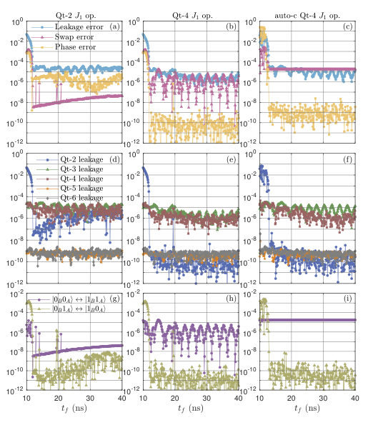
<figcaption class="paper-figure-caption"><b>Fig 4.</b> FIG. 4. Error contributions to the optimized J1: The first column (panels (a), (d), and (g)) for the Qt-2 J1 optimization, the second column (panels (b), (e), and (h)) for the Qt-4 J1 optimization, and the third column (panels (c), (f), and (i)) for the auto-c Qt-4 J1 optimization. The first row (panels (a), (b), and (c)) shows the individual contributions to J1 from the leakage error (light-blue-circle line), the swap error (light- purple-triangle line), and the phase error (yellow-square line). The second row (panels (d), (e), and (f)) provides a breakdown of the leakage error into the contributions from the Qt-2, Qt- 3, Qt-4, Qt-5, and Qt-6 leakage errors, represented by dark-...</figcaption>
</figure>
<figure class="paper-figure-card">
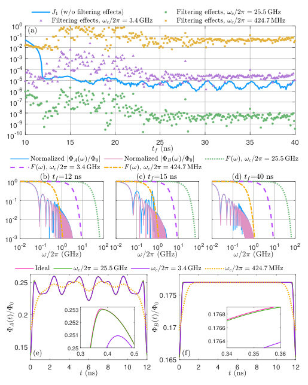
<figcaption class="paper-figure-caption"><b>Fig 5.</b> FIG. 5. Filtering effects on the optimized CZ gates via the Qt-4 J1 optimization. Panel (a) shows the ideal J1 (bold blue line) obtained from the Qt-4 J1 optimization without filter- ing effects. The green circles, purple triangles, and yellow squares represent the filtering effects on the optimized sam- ples (bold blue line) from Tektronix AWGs, modeled by a Gaussian filter F(ω) = exp(−ω2/ω2 c) with cutoff frequencies ωc/2π = 25.5 GHz, 3.4 GHz, and 424.7 MHz, respectively. Fil- tering effects are quantified by the infidelity enhancement due to pulse distortion from the limited bandwidth of the AWGs. Panels (b), (c), and (d) show the spectra of the optimized samples from panel (a) for tf =...</figcaption>
</figure>
</div>

<p><strong>Summary.</strong> This work presents a comprehensive optimal-control framework to design high-fidelity controlled-Z gates for superconducting transmon qubits. By systematically modeling intrinsic Hamiltonian errors and realistic decoherence (including fast and slow dephasing), the authors achieved fast gates with extremely low error rates. The results establish a robust design methodology that minimizes the need for constant recalibration as quantum processors scale.</p>
<p><strong>Why it may be interesting.</strong> It provides a highly practical, physics-informed methodology for designing quantum gates by explicitly balancing coherent control errors against dissipative noise channels, which is a key concern in open quantum systems.</p>
<details>
<summary>Detailed structure</summary>
<p><strong>Main problem.</strong> The paper addresses the critical challenge of developing quantum gates for superconducting qubits that are simultaneously high-fidelity, fast, and robust against environmental noise, which is crucial for scaling quantum processors.</p>
<p><strong>Main result.</strong> They achieved 12-ns controlled-Z gates with intrinsic errors suppressed to the $2	imes10^{-5}$ level, demonstrating that gate performance can be maintained below $10^{-3}$ even with significant noise sources.</p>
<p><strong>Method.</strong> The authors developed a unified optimal-control framework that systematically incorporates both intrinsic Hamiltonian errors and realistic decoherence mechanisms (energy relaxation and dephasing) into the gate design.</p>
<p><strong>Model / system.</strong> The system uses directly coupled, frequency-tunable superconducting transmon qubits. The analysis involves modeling the system Hamiltonian and projecting the evolution onto the computational subspace while incorporating noise models calibrated against experimental measurements.</p>
<p><strong>Key observables.</strong> Gate infidelity, intrinsic error suppression level, and noise tolerance margins.</p>
<p><strong>Important parameters / regimes.</strong> Gate speed (12-ns), intrinsic error level ($2	imes10^{-5}$), transmon asymmetry parameter ($a_{EJ}$), and decoherence rates ($T_1, T_{\phi}$).</p>
<p><strong>Assumptions / limitations.</strong> The framework assumes the direct-coupling architecture, and certain derivations rely on approximations regarding the smallness of leakage probabilities and the low-order nature of error contributions.</p>
<p><strong>Figures summary.</strong> Figure 1 illustrates the decoupling of even-quanta and odd-quanta states, detailing leakage pathways from computational basis states to non-computational states.</p>
<p><strong>Paper structure.</strong> The paper progresses from defining the need for robust gates, to developing the optimal-control framework that decomposes errors, to constructing realistic noise models, and finally presenting results showing how asymmetry and sweet-spot engineering balance speed, fidelity, and noise resilience.</p>
</details>
<details>
<summary>Abstract</summary>
<p>Fault-tolerant quantum computing requires quantum gates that combine short duration, high fidelity, and robustness to noise. As quantum processors scale, robustness becomes increasingly important because exhaustive characterization and frequent recalibration of individual gates become impractical. We present a comprehensive optimal-control framework for controlled-Z (CZ) gates between directly coupled, frequency-tunable transmons that systematically accounts for intrinsic Hamiltonian errors and realistic decoherence mechanisms, including energy relaxation and dephasing. Using smooth, single-shot flux pulses, we obtain 12-ns CZ gates---close to the theoretical speed limit of 11.6 ns---with intrinsic errors suppressed to the $2\times10^{-5}$ level. We construct dephasing noise models, calibrated against published experimental measurements, that capture fast dephasing from room-temperature control electronics and slow dephasing from $1/f$ flux noise. Using these models, we identify dephasing sweet spots that suppress sensitivity to dephasing noise. We further exploit transmon asymmetry as a design parameter to access distinct noise-resilient operating regimes. These results establish an experimentally applicable framework for balancing gate speed, fidelity, and noise robustness while reducing characterization and recalibration overhead.</p>
</details>
<p><sub><a href="#top">↑ back to top</a></sub></p>

<p><a id="paper-2610.30070"></a></p>
<h3 id="a-random-sampling-method-to-test-the-weak-eigenstate-thermalization-hypothesis"><a href="http://arxiv.org/abs/2610.30070v1">A random sampling method to test the weak Eigenstate Thermalization Hypothesis</a></h3>
<p><strong>Authors:</strong> Nicolaus A. Chlanda, John Keim, Isabel Martinez-Robles, Sarah E. Spielman, Thomas J. Carroll, Michael W. Noel<br>
<strong>Type:</strong> theory · <strong>Category:</strong> other · <strong>PDF:</strong> <a href="https://arxiv.org/pdf/2610.30070v1">https://arxiv.org/pdf/2610.30070v1</a><br>
<strong>Analysis basis:</strong> full PDF text, analyzed in chunks
<strong>Topic relevance:</strong> 🔥 <code>analog quantum simulation</code> <strong>4/5</strong> · <code>Rydberg arrays</code> <strong>3/5</strong> · <code>scars &amp; prethermalization</code> <strong>1/5</strong></p>
<div class="figure-strip-hint">↔ Scroll figures horizontally</div>
<div class="paper-figures-scroll">
<figure class="paper-figure-card">
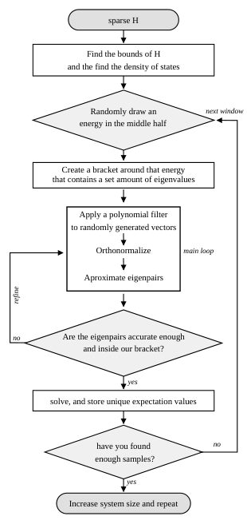
<figcaption class="paper-figure-caption"><b>Fig 1.</b> Figure 1. A flowchart of the general method. For a sparse Hamiltonian H find the normalized density of states ρ(E) and begin sampling interior energies. Around each accepted en- ergy an adaptive bracket is created, in which we then create a set of random gaussian vectors. We now begin the main loop: apply a polynomial to vectors, orthonormalize, and solve for eigenpairs. If they are accurate enough, and inside our bracket we have created, their expectation values are stored. Once we have hit our desired number, we first compute the standard deviation of expectation values and continue to the next sys- tem size if available. Once we have tested enough systems, we then plot the standard...</figcaption>
</figure>
<figure class="paper-figure-card">
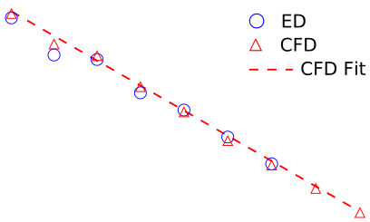
<figcaption class="paper-figure-caption"><b>Fig 2.</b> Figure 3. Dependence of σ∆S on the of Hilbert-space di- mension D for the two-body sp p′s′ model. Blue circles are exact-diagonalization (ED) results for the available small- system sizes; red triangles are obtained with the CFD sam- pling method. The dashed lines is a power-law fit to the sampled results, consistent with a D−1/2 dependence.</figcaption>
</figure>
<figure class="paper-figure-card">
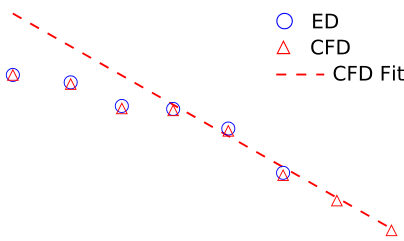
<figcaption class="paper-figure-caption"><b>Fig 3.</b> Figure 4. Dependence of σ∆S on the of Hilbert-space di- mension D for the three-body sp p′s′ model. Blue circles are exact-diagonalization (ED) results for the available small- system sizes; red triangles are obtained with the CFD sam- pling method. The dashed lines is a power-law fit to the sampled results for nine atoms and greater, consistent with a D−1/2 dependence.</figcaption>
</figure>
</div>

<p><strong>Summary.</strong> The authors introduce a scalable random sampling method to test the weak Eigenstate Thermalization Hypothesis (wETH) on large quantum systems. They apply this method to a Rydberg atom model featuring complex two- and three-body interactions. The results confirm that the system's eigenstate fluctuations decay as $D^{-1/2}$, validating the system's adherence to wETH even in regimes previously inaccessible to exact diagonalization.</p>
<p><strong>Why it may be interesting.</strong> This work directly tackles the fundamental question of quantum thermalization in complex, interacting many-body systems relevant to cold atom and quantum simulation platforms, providing a scalable numerical tool for testing ETH.</p>
<details>
<summary>Detailed structure</summary>
<p><strong>Main problem.</strong> The paper addresses the challenge of testing the weak Eigenstate Thermalization Hypothesis (wETH) for quantum systems whose Hamiltonians are too large for exact diagonalization.</p>
<p><strong>Main result.</strong> The proposed random sampling method successfully demonstrated that the fluctuations in eigenstate expectation values decay with the expected $D^{-1/2}$ scaling, consistent with wETH.</p>
<p><strong>Method.</strong> A novel random sampling algorithm combining Kernel Polynomial Method (KPM), Chebyshev Filter Diagonalization (CFD), and random vector projection is used to estimate expectation values for eigenstates.</p>
<p><strong>Model / system.</strong> The study uses a Rydberg atom system placed in a linear array, modeled by a Hamiltonian incorporating both two-body and three-body dipole-dipole interactions tuned via the Stark effect.</p>
<p><strong>Key observables.</strong> The primary observable is the variance ($\sigma^2_{\Delta S}$) of an expectation value ($\hat{S}$) calculated across sampled eigenstates.</p>
<p><strong>Important parameters / regimes.</strong> The analysis tracks scaling with the Hilbert space dimension ($D$), comparing results across two-body and three-body interaction regimes.</p>
<p><strong>Assumptions / limitations.</strong> The method assumes that the fraction of atypical eigenstates vanishes in the thermodynamic limit for wETH to hold, and it ignores the angular dependence of the dipole-dipole interaction.</p>
<p><strong>Figures summary.</strong> Figure 1 details the sampling flowchart (KPM $
ightarrow$ CFD $
ightarrow$ Variance Plotting). Figures 3 and 4 show the calculated $\sigma\Delta S$ vs. $D$ for both two-body and three-body models, comparing ED and CFD results.</p>
<p><strong>Paper structure.</strong> The paper introduces the sampling method, applies it to the Rydberg atom system with complex interactions, presents quantitative results showing $D^{-1/2}$ scaling, and compares computational feasibility against exact diagonalization limits.</p>
</details>
<details>
<summary>Abstract</summary>
<p>We introduce a random sampling method for testing the weak Eigenstate Thermalization Hypothesis (wETH) that is particularly useful for large, sparse Hamiltonians. We test the method on a well-studied Rydberg atom system that exhibits both two- and three-body dipole-dipole interactions. Our results show that our method allows for the study of system sizes significantly beyond the limits of exact diagonalization. We find that the fluctuations in eigenstate expectation values decay as the Hilbert space dimension $D^{-1/2}$, consistent with wETH and in agreement with previous numerical results.</p>
</details>
<p><sub><a href="#top">↑ back to top</a></sub></p>

<p><a id="paper-2610.29834"></a></p>
<h3 id="teaching-quantum-mechanics-in-secondary-schools-a-qubit-first-learning-path-to-bells-inequalities"><a href="http://arxiv.org/abs/2610.29834v1">Teaching quantum mechanics in secondary schools: A qubit-first learning path to Bell's inequalities</a></h3>
<p><strong>Authors:</strong> Alberto Carlini, Andrea Lanza, Dalida Monti, Anna Soso, Elena Losero, Maddalena Mari, Matteo Oñate Orozco, Maria Bondani<br>
<strong>Type:</strong> both · <strong>Category:</strong> other · <strong>PDF:</strong> <a href="https://arxiv.org/pdf/2610.29834v1">https://arxiv.org/pdf/2610.29834v1</a><br>
<strong>Analysis basis:</strong> full PDF text, analyzed in chunks
<strong>Topic relevance:</strong> 🔥 <code>quantum optics experiment</code> <strong>4/5</strong> · <code>interference shaping light</code> <strong>1/5</strong> · <code>quantum measurements</code> <strong>1/5</strong></p>
<div class="figure-strip-hint">↔ Scroll figures horizontally</div>
<div class="paper-figures-scroll">
<figure class="paper-figure-card">
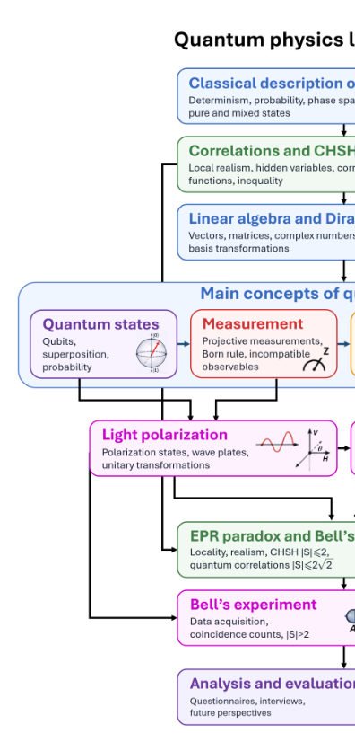
<figcaption class="paper-figure-caption"><b>Fig 1.</b> Figure 1: Conceptual sequence.</figcaption>
</figure>
<figure class="paper-figure-card">
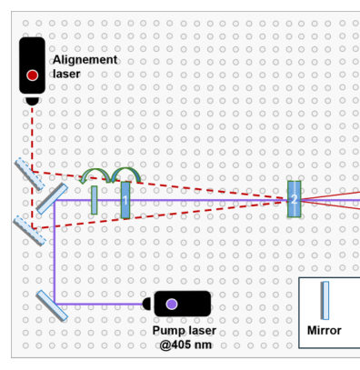
<figcaption class="paper-figure-caption"><b>Fig 2.</b> Figure 2: Schematic of the experimental setup. λ/2: half-wave plate; BBO 1, BBO 2: β-Barium Borate crystals; SPAD: single photons avalanche detector; FPGA: field programmable gate array.</figcaption>
</figure>
<figure class="paper-figure-card">
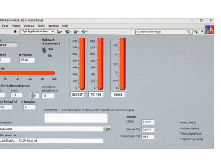
<figcaption class="paper-figure-caption"><b>Fig 3.</b> Figure 3: Experimental results obtained with the apparatus in Genoa. Left: prelimi- nary measurements of correlations between the two detectors’ outputs as a function of the angle set on one of the polarizers. Right: typical screenshot of the LabView in- terface. The displyed result is particularly good ⟨Sexp⟩= 2.5227 ± 0.0133.</figcaption>
</figure>
</div>

<p><strong>Summary.</strong> This paper introduces a novel, qubit-first curriculum to teach quantum mechanics to secondary school students, using light polarization as the physical model. It successfully integrates theory, simulations, and hands-on lab work, culminating in students performing an authentic Bell test. The framework proves that this concrete, progressive approach allows students to grasp deep quantum concepts like entanglement and Bell violations meaningfully.</p>
<p><strong>Why it may be interesting.</strong> It provides a highly tangible, experimentally grounded pedagogical framework for teaching foundational quantum concepts, particularly entanglement and Bell tests, which is valuable for researchers developing educational tools or teaching quantum optics.</p>
<details>
<summary>Detailed structure</summary>
<p><strong>Main problem.</strong> Teaching quantum mechanics at the secondary school level is challenging due to traditional approaches presenting theory as disconnected phenomena requiring extensive classical physics knowledge.</p>
<p><strong>Main result.</strong> The proposed qubit-first curriculum, grounded in two-state formalism and supported by authentic lab work, significantly improves students' conceptual understanding and ability to link theory to experiment.</p>
<p><strong>Method.</strong> The work details the design, implementation, and evaluation of a curriculum integrating theory, lab activities (using light polarization), simulations, and inquiry-based learning.</p>
<p><strong>Model / system.</strong> The primary model is the two-state system (qubit), physically realized using the polarization states of single photons. The curriculum progresses from superposition to entanglement, culminating in the experimental violation of Bell's inequalities.</p>
<p><strong>Key observables.</strong> Polarization states, coincidence counts, violation of Bell's inequalities (CHSH/Hardy formulations).</p>
<p><strong>Important parameters / regimes.</strong> Two-dimensional Hilbert space restriction, unitary transformations implemented by wave plates, and the degree of entanglement.</p>
<p><strong>Assumptions / limitations.</strong> The approach assumes that restricting the discussion to two-dimensional Hilbert spaces simplifies the formalism while retaining core quantum concepts.</p>
<p><strong>Figures summary.</strong> The notes mention a conceptual sequence of learning progression (Figure 1) and a schematic of the experimental setup involving polarization optics, BBO crystals, and SPADs (Figure 2).</p>
<p><strong>Paper structure.</strong> The paper outlines a pedagogical progression: starting with basic quantum postulates via qubits, moving through superposition and unitary evolution using optics, building up to composite systems (entanglement), and concluding with the experimental verification of Bell's inequalities.</p>
</details>
<details>
<summary>Abstract</summary>
<p>Teaching quantum mechanics at the secondary school level remains a major educational challenge. Traditional historical approaches often present the theory as a sequence of disconnected phenomena, requiring extensive prior knowledge of classical physics before students can appreciate the conceptual structure of quantum physics. In this work, we present the design, implementation, and evaluation of a curriculum based on the two state (qubit first) approach, in which the fundamental postulates of quantum mechanics are introduced through mathematically accessible two level systems and realized with light polarization. The curriculum integrates theoretical instruction, laboratory activities, a coherent progression grounded in the interactive simulations, and inquiry based learning into a coherent pathway that progresses from quantum states and superposition to entanglement and the experimental violation of Bell's inequalities. A distinctive feature of the project is the experimental realization of the violation of Bell's inequalities obtained in a newly established quantum optics laboratory in an Italian high school, where students performed, for the first time in Italy, an authentic Bell test using polarization-entangled photons. The same educational framework was adopted for in service teacher professional development courses. Learning outcomes were evaluated through mixed methods. Preliminary analysis indicates significant improvements in conceptual understanding, confidence in using mathematical formalism, and appreciation of the relationship between theory, experimentation, and the foundations of quantum mechanics. The proposed curriculum shows that two-state formalism and supported by real laboratory experiences enables secondary-school students to engage more meaningfully with both the conceptual foundations of quantum mechanics and their experimental verification.</p>
</details>
<p><sub><a href="#top">↑ back to top</a></sub></p>

<p><a id="paper-2610.28854"></a></p>
<h3 id="two-quantum-skyrmions-form-a-magnon-josephson-junction"><a href="http://arxiv.org/abs/2610.28854v1">Two quantum skyrmions form a magnon Josephson junction</a></h3>
<p><strong>Authors:</strong> R. L. Silva<br>
<strong>Type:</strong> theory · <strong>Category:</strong> other · <strong>PDF:</strong> <a href="https://arxiv.org/pdf/2610.28854v1">https://arxiv.org/pdf/2610.28854v1</a><br>
<strong>Analysis basis:</strong> full PDF text, analyzed in chunks
<strong>Topic relevance:</strong> 🔥 <code>analog quantum simulation</code> <strong>4/5</strong> · <code>methods for driven-dissipative</code> <strong>2/5</strong></p>
<div class="figure-strip-hint">↔ Scroll figures horizontally</div>
<div class="paper-figures-scroll">
<figure class="paper-figure-card">
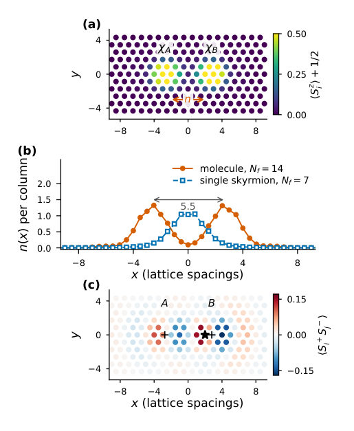
<figcaption class="paper-figure-caption"><b>Fig 1.</b> FIG. 1. The free skyrmion molecule (K = 0.03, 261-site sta- dium, no pinning). (a) Flipped-spin density ⟨Sz i ⟩+ 1/2 in the Nf = 14 ground state: two skyrmions of seven flipped spins centered at x = −2.75 and +2.79. The number n of magnons transferred between them is conjugate to the rela- tive helicity θ = χA −χB. (b) Flipped spins per column for the molecule and for one skyrmion in the same stadium. (c) In-plane correlation ⟨S+ i S− j ⟩between every site i and a wall site j of skyrmion B (star); crosses mark the lobe centers. The correlation reaches 0.16 across the gap and follows the vortex pattern of skyrmion A.</figcaption>
</figure>
<figure class="paper-figure-card">
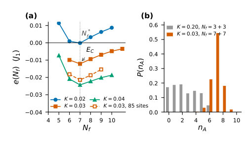
<figcaption class="paper-figure-caption"><b>Fig 2.</b> FIG. 2. (a) Binding energy per flipped spin of one quantum skyrmion on a 55-site disc for three anisotropies and on an 85-site disc for K = 0.03. The minimum at N ∗ f = 7 defines the natural size and its curvature the charging energy EC. (b) Number of flipped spins in the left half of a stadium: for K = 0.20 and Nf = 3 + 3 (gray) the two skyrmions have coalesced; for K = 0.03 and Nf = 7 + 7 (color) the free molecule holds two skyrmions of seven.</figcaption>
</figure>
<figure class="paper-figure-card">
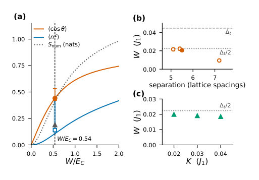
<figcaption class="paper-figure-caption"><b>Fig 3.</b> FIG. 3. (a) Ground state of the rotor of Eq. (4): relative- helicity coherence ⟨cos θ⟩, magnon-number fluctuation ⟨n2⟩, and number entropy Snum versus W/EC. The measured co- herence (circle; bar: range over wall windows) fixes W/EC = 0.54 (dashed line). At that ratio, the shaded bar is the partition-dependent range of the measured magnon-number fluctuation, the open square the excess variance across the midpoint cut, and the triangle the measured excess of number entropy, a lower bound on Snum. (b) Josephson coupling W versus the separation of the two skyrmions at K = 0.03 (open circles, weakly pinned pairs; filled circle, free molecule); error bars span EC = 0.035–0.041J1. (c) W of the...</figcaption>
</figure>
</div>

<p><strong>Summary.</strong> This paper demonstrates that two quantum skyrmions bind into a molecule that functions as a magnon Josephson junction. By using DMRG, the authors derive an effective Hamiltonian describing the junction's energy, finding that the coupling strength is determined by magnetic frustration. This work is significant because it links topological spin physics to controllable quantum circuit elements.</p>
<p><strong>Why it may be interesting.</strong> The work connects topological spin textures (skyrmions) to fundamental quantum circuit elements (Josephson junctions), providing a solid theoretical framework for realizing superconducting-like quantum behavior in magnetic materials.</p>
<details>
<summary>Detailed structure</summary>
<p><strong>Main problem.</strong> The study investigates the physical realization of a magnon Josephson junction formed by the binding of two quantum skyrmions in a frustrated magnet.</p>
<p><strong>Main result.</strong> The bound pair acts as a Josephson junction described by $H_{rel} = E_C n^2 - W \cos 	heta$, with the coupling energy $W$ being set by the frustration ($J_2$) rather than the anisotropy ($K$).</p>
<p><strong>Method.</strong> The research employs Density Matrix Renormalization Group (DMRG) calculations on the spin lattice to determine the effective Hamiltonian parameters.</p>
<p><strong>Model / system.</strong> The system is a frustrated spin-1/2 magnet modeled by a Hamiltonian involving nearest-neighbor and next-nearest-neighbor interactions. The effective low-energy physics is mapped onto a Josephson junction Hamiltonian governing the relative helicity ($  heta$) and magnon number ($n$).</p>
<p><strong>Key observables.</strong> Relative helicity coherence ($\langle \cos 	heta 
angle$), magnon-number fluctuations ($\langle n^2 
angle$), binding energy, charging energy ($E_C$), and Josephson energy ($W$).</p>
<p><strong>Important parameters / regimes.</strong> The ratio $W/E_C \simeq 0.5$ places the junction in a crossover regime; the coupling $W$ is found to be $\simeq 0.02J_1$.</p>
<p><strong>Assumptions / limitations.</strong> The analysis relies on mapping the complex spin dynamics onto a simplified rotor model for the relative helicity, with noted discrepancies between the rotor model and full DMRG results.</p>
<p><strong>Figures summary.</strong> Figures illustrate the skyrmion structure, the dependence of binding energy on the number of flipped spins, and plots showing coherence ($\langle \cos 	heta 
angle$) and coupling ($W$) versus separation or $W/E_C$.</p>
<p><strong>Paper structure.</strong> The paper first establishes the physical model and the effective Josephson junction Hamiltonian. It then uses DMRG to calculate key parameters like $E_C$ and $W$ by analyzing binding energies and coherence. Finally, it discusses the resulting crossover regime and the physical implications of the coupling strength.</p>
</details>
<details>
<summary>Abstract</summary>
<p>Two quantum skyrmions in a frustrated spin-$1/2$ magnet bind into a molecule, and the molecule acts as a magnon Josephson junction: the relative helicity $θ$ and the number $n$ of magnons transferred between them obey $H=E_Cn^2-W\cosθ$. DMRG on the $J_1$--$J_2$ triangular lattice gives $E_C$ as the curvature of the skyrmion energy at its natural size of seven flipped spins, and the measured helicity coherence fixes $W\simeq0.02J_1$, half the skyrmion--antiskyrmion tunnel splitting and independent of the anisotropy. Two helicity qubits side by side are thus strongly coupled by their own interaction.</p>
</details>
<p><sub><a href="#top">↑ back to top</a></sub></p>

<p><a id="paper-2610.29804"></a></p>
<h3 id="conservation-in-every-quantum-measurement-outcome"><a href="http://arxiv.org/abs/2610.29804v1">Conservation in Every Quantum Measurement Outcome?</a></h3>
<p><strong>Authors:</strong> E. Okon, D. Sudarsky, M. Wiedemann<br>
<strong>Type:</strong> theory · <strong>Category:</strong> other · <strong>PDF:</strong> <a href="https://arxiv.org/pdf/2610.29804v1">https://arxiv.org/pdf/2610.29804v1</a><br>
<strong>Analysis basis:</strong> full PDF text, analyzed in chunks
<strong>Topic relevance:</strong> 🔥 <code>quantum measurements</code> <strong>4/5</strong> · <code>Full counting statistics</code> <strong>1/5</strong></p>
<div class="figure-strip-hint">↔ Scroll figures horizontally</div>
<div class="paper-figures-scroll">
<figure class="paper-figure-card">
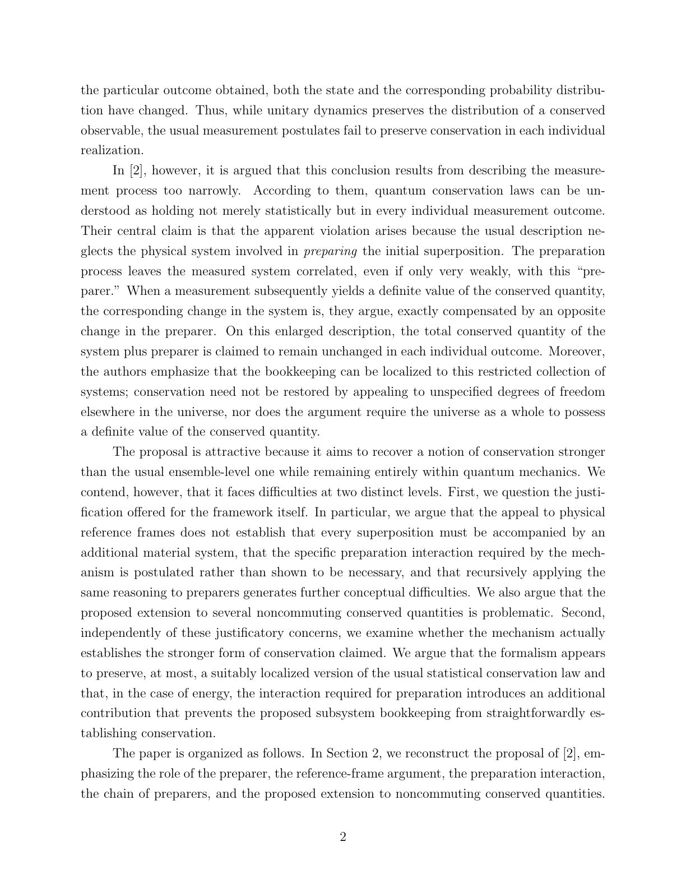
<figcaption class="paper-figure-caption"><b>Fig 1.</b> Low-resolution page preview, page 2</figcaption>
</figure>
<figure class="paper-figure-card">
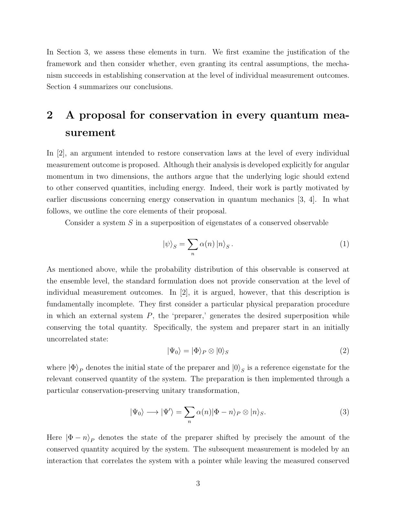
<figcaption class="paper-figure-caption"><b>Fig 2.</b> Low-resolution page preview, page 3</figcaption>
</figure>
<figure class="paper-figure-card">
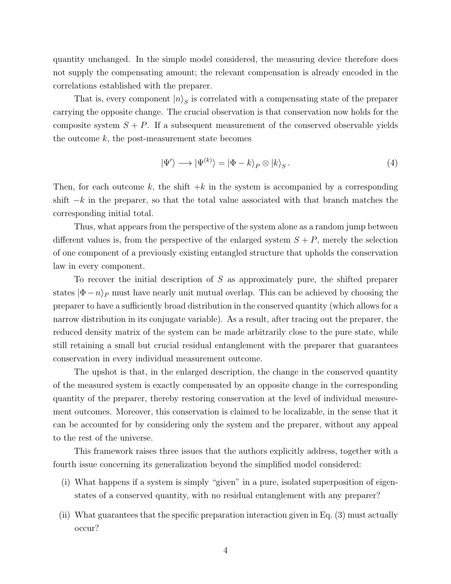
<figcaption class="paper-figure-caption"><b>Fig 3.</b> Low-resolution page preview, page 4</figcaption>
</figure>
<figure class="paper-figure-card">
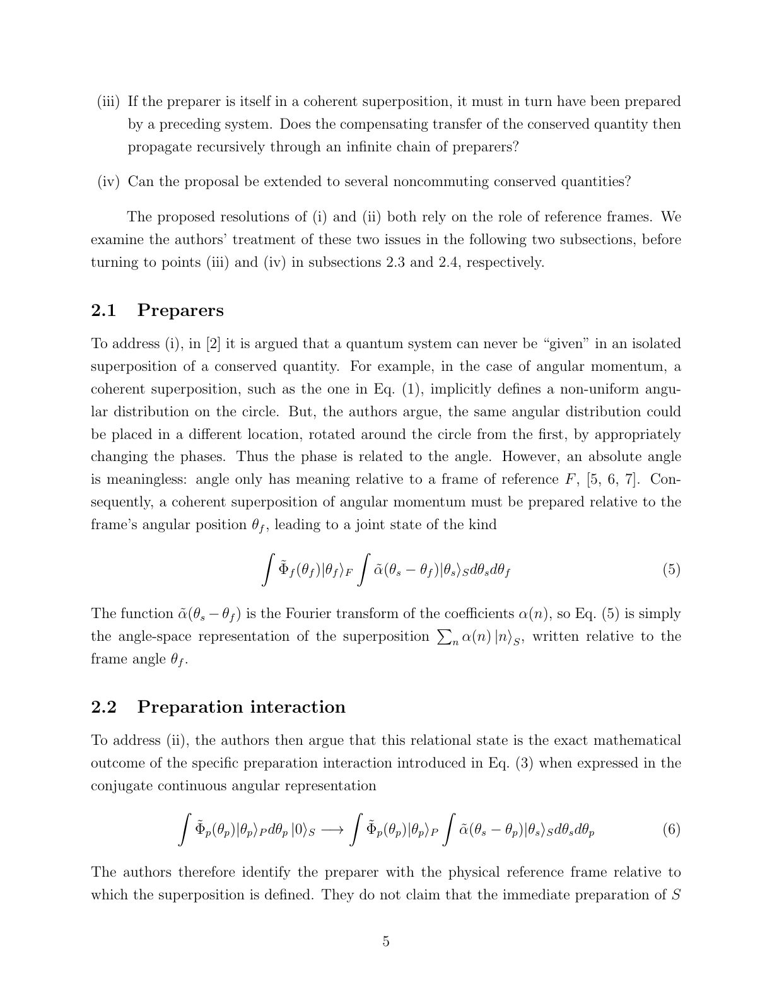
<figcaption class="paper-figure-caption"><b>Fig 4.</b> Low-resolution page preview, page 5</figcaption>
</figure>
<figure class="paper-figure-card">
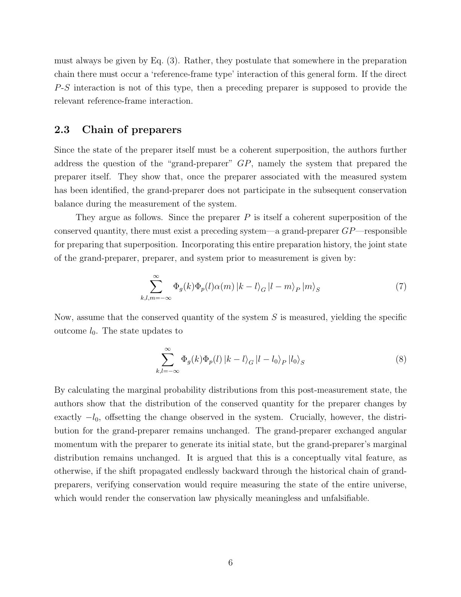
<figcaption class="paper-figure-caption"><b>Fig 5.</b> Low-resolution page preview, page 6</figcaption>
</figure>
</div>

<p><strong>Summary.</strong> This theoretical paper critically examines a proposal suggesting that quantum conservation laws are preserved at the individual measurement outcome level by correlating the measured system with a 'preparer' system. The authors demonstrate that while the mechanism can account for statistical compensation, it fails to establish a robust, non-statistical conservation law for general observables, particularly when multiple noncommuting quantities are involved.</p>
<p><strong>Why it may be interesting.</strong> It tackles fundamental conceptual issues at the intersection of quantum measurement theory, conservation laws, and the role of reference frames, which is crucial for understanding open quantum systems dynamics.</p>
<details>
<summary>Detailed structure</summary>
<p><strong>Main problem.</strong> The paper investigates whether conservation laws can be maintained at the level of individual quantum measurement outcomes, a regime where standard statistical conservation laws break down.</p>
<p><strong>Main result.</strong> The proposed mechanism, which relies on correlating the measured system with a 'preparer' system, fails to establish true non-statistical conservation for general observables, especially when considering noncommuting quantities or the full Hamiltonian.</p>
<p><strong>Method.</strong> The authors analyze the proposal by enlarging the quantum description to include a preparer system (S+P) and examining how conservation laws are maintained across measurement outcomes and preparation interactions.</p>
<p><strong>Model / system.</strong> The model involves a quantum system (S) whose state is a superposition of eigenstates of a conserved quantity, which is prepared via a unitary interaction involving a correlated 'preparer' system (P).</p>
<p><strong>Key observables.</strong> Conserved quantities ($\hat{O}$), expectation values, and the change in probability distributions for individual measurement outcomes.</p>
<p><strong>Important parameters / regimes.</strong> The correlation strength between S and P, and the nature of the preparation interaction Hamiltonian ($H_{int}$).</p>
<p><strong>Assumptions / limitations.</strong> The core assumption being tested is that the preparation process must be describable by a specific, compensating interaction involving a reference frame, which the authors ultimately challenge.</p>
<p><strong>Paper structure.</strong> The paper systematically analyzes the proposal by first establishing the basic compensation mechanism for a single observable, then extending the analysis to chains of preparers, and finally showing failures when considering noncommuting observables or the full Hamiltonian.</p>
</details>
<details>
<summary>Abstract</summary>
<p>In quantum mechanics, conservation laws are usually understood only statistically and only in the context of unitary evolution: during such evolution, if an observable commutes with the Hamiltonian, its expectation value and Born-rule probability distribution remain unchanged. Individual measurement outcomes, however, disrupt even this weak form of statistical conservation. Recently, though, it has been argued that a stronger, non-statistical form of conservation, valid at the level of individual measurement outcomes, can be recovered. The proposal relies on the claim that any superposition of eigenstates of a conserved quantity must ultimately be prepared relative to another physical system, which serves as the relevant reference frame and remains correlated with the system being prepared. On this enlarged description, the change observed in the measured system is claimed to be exactly compensated by an opposite change in the preparer, thereby restoring conservation at the level of individual measurement outcomes. We analyze this proposal and argue that it faces significant conceptual difficulties. We show that the proposed mechanism is not adequately justified and, moreover, does not establish conservation in individual measurement outcomes as claimed.</p>
</details>
<p><sub><a href="#top">↑ back to top</a></sub></p>

<p><a id="paper-2610.28867"></a></p>
<h3 id="engineering-low-latency-high-throughput-quantum-decoders-on-nvidia-gpus"><a href="http://arxiv.org/abs/2610.28867v1">Engineering Low-Latency, High-Throughput Quantum Decoders on NVIDIA GPUs</a></h3>
<p><strong>Authors:</strong> Stefano Markidis, Luca Pennati, Ivy Peng<br>
<strong>Type:</strong> experiment · <strong>Category:</strong> quantum information and computing · <strong>PDF:</strong> <a href="https://arxiv.org/pdf/2610.28867v1">https://arxiv.org/pdf/2610.28867v1</a><br>
<strong>Analysis basis:</strong> full PDF text, analyzed in chunks
<strong>Topic relevance:</strong> 🔥 <code>QC/QI experiment</code> <strong>4/5</strong> · <code>quantum measurements</code> <strong>1/5</strong></p>
<div class="figure-strip-hint">↔ Scroll figures horizontally</div>
<div class="paper-figures-scroll">
<figure class="paper-figure-card">
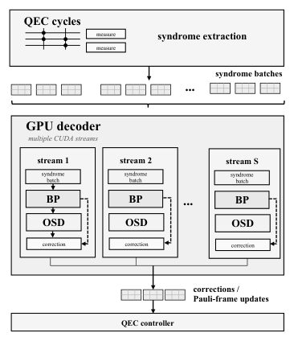
<figcaption class="paper-figure-caption"><b>Fig 1.</b> Fig. 1. GPU decoding workflow in a QEC system.</figcaption>
</figure>
<figure class="paper-figure-card">
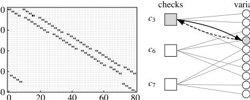
<figcaption class="paper-figure-caption"><b>Fig 2.</b> Fig. 2. Sparse check matrix (a) and the corresponding Tanner subgraph (b). Each nonzero defines a check-variable edge.</figcaption>
</figure>
<figure class="paper-figure-card">
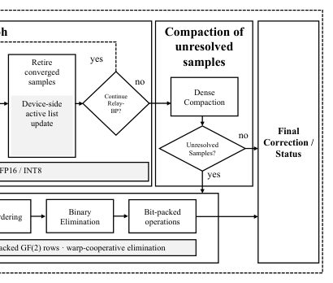
<figcaption class="paper-figure-caption"><b>Fig 3.</b> Fig. 3. GPU workflow within one instantiated CUDA Graph.</figcaption>
</figure>
<figure class="paper-figure-card">
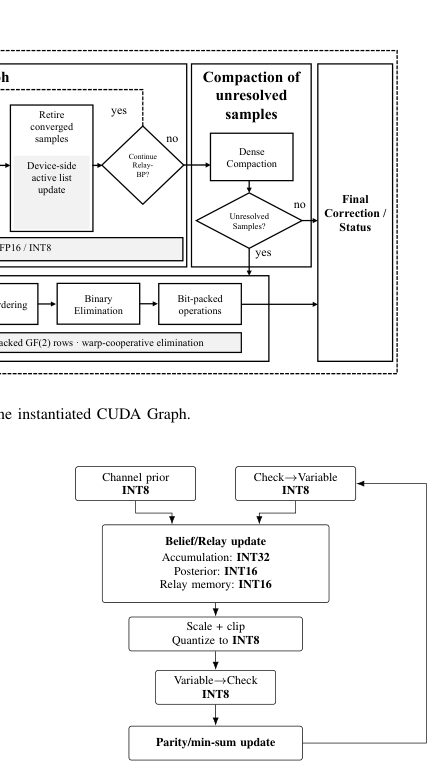
<figcaption class="paper-figure-caption"><b>Fig 4.</b> Fig. 4. Relay-BP quantization with INT8 messages, INT32 accumulation, and INT16 posterior beliefs and Relay memory.</figcaption>
</figure>
<figure class="paper-figure-card">
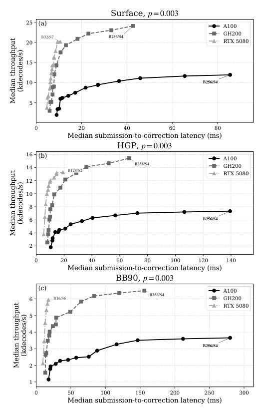
<figcaption class="paper-figure-caption"><b>Fig 5.</b> Fig. 5. Latency-throughput Pareto frontiers at p = 0.003. Endpoint annota- tions give batch size B and stream count S at the highest-throughput point.</figcaption>
</figure>
</div>

<p><strong>Summary.</strong> This paper presents a highly optimized, hardware-accelerated decoder for Quantum Error Correction (QEC) codes running on NVIDIA GPUs. By combining advanced algorithms like Belief Propagation with aggressive optimizations such as INT8 quantization and CUDA Graphs, the authors achieve significant performance gains. The results demonstrate that commodity GPUs can be engineered into viable, low-latency clusters for future fault-tolerant quantum computing systems.</p>
<p><strong>Why it may be interesting.</strong> This work is highly relevant as it directly tackles the engineering bottleneck for fault-tolerant quantum computation by providing a roadmap for building scalable, high-speed classical control electronics for quantum processors.</p>
<details>
<summary>Detailed structure</summary>
<p><strong>Main problem.</strong> The paper addresses the critical need for classical decoders for Quantum Error Correction (QEC) that can operate with extremely low latency and high throughput to keep pace with real-time quantum measurement data.</p>
<p><strong>Main result.</strong> The combination of hardware optimizations, mixed-precision arithmetic (INT8), and concurrent processing allows commodity GPUs to achieve near state-of-the-art throughput while significantly reducing the median submission-to-correction latency.</p>
<p><strong>Method.</strong> The authors implemented a decoder combining Relay Belief Propagation (Relay-BP) with Order-Zero Ordered Statistics (OSD-0) on NVIDIA GPUs, optimizing the entire pipeline using CUDA Graphs and advanced low-level kernel techniques.</p>
<p><strong>Model / system.</strong> The work focuses on decoding syndromes generated by various QEC codes, including the surface, hypergraph product, and bivariate bicycle codes. The decoding process involves solving linear equations over GF(2) using message-passing algorithms.</p>
<p><strong>Key observables.</strong> Amortized decoding time ($\mu s$/sample), logical error rate (LER), throughput, and submission-to-correction latency.</p>
<p><strong>Important parameters / regimes.</strong> Error probability ($p \in \{0.001, 0.003, 0.005\}$), batch size ($B$), and the specific GPU architectures (A100, GH200, RTX 5080).</p>
<p><strong>Assumptions / limitations.</strong> The analysis assumes that independent syndrome batches can be submitted back-to-back to concurrent decoder instances, and that mixed-precision arithmetic maintains accuracy.</p>
<p><strong>Figures summary.</strong> Figures illustrate the GPU decoding workflow using CUDA Graphs, the structure of the QEC check matrix (Tanner subgraph), and performance trade-offs between latency and throughput based on batch size and stream count.</p>
<p><strong>Paper structure.</strong> The paper details the algorithmic components (Relay-BP and OSD-0), followed by extensive hardware optimization techniques (CUDA Graphs, mixed precision, quantization), and concludes with comprehensive benchmarking across multiple QEC codes and GPU platforms.</p>
</details>
<details>
<summary>Abstract</summary>
<p>We design and optimize a quantum error correction (QEC) decoder for NVIDIA GPUs, combining Relay belief propagation, a state-of-the-art message-passing algorithm, with order-zero ordered statistics post-processing. Our implementation uses CUDA Graphs to control GPU execution, stops updates for converged samples, and collects unresolved samples in queues for post-processing. We optimize sparse traversal through coalesced message accesses, prefetching, and register reuse, and accelerate binary post-processing with warp-level collectives. In addition, mixed FP16-FP32 arithmetic and INT8 quantization reduce message storage and traffic while retaining accuracy using accumulators at higher precision. We evaluate surface, hypergraph product, and bivariate bicycle code workloads on NVIDIA A100 and GH200 data-center GPUs and a commodity RTX 5080. On the bivariate bicycle code at error probability 0.003, INT8 halves amortized decoding time relative to independently tuned FP32 with a negligible logical error rate increase on RTX 5080. With independent syndrome batches submitted back-to-back to concurrent decoder instances, RTX 5080 delivers 91% of GH200's highest measured throughput with an 8.9x shorter median submission-to-correction latency. The combination of performance optimization, mixed precision, INT8 quantization, and concurrent decoder instances opens a path toward QEC decoder clusters built from commodity GPUs.</p>
</details>
<p><sub><a href="#top">↑ back to top</a></sub></p>

<p><a id="paper-2610.29440"></a></p>
<h3 id="from-hard-core-to-soft-core-bosons-in-a-shell-trap"><a href="http://arxiv.org/abs/2610.29440v1">From hard-core to soft-core bosons in a shell trap</a></h3>
<p><strong>Authors:</strong> G. Costa, S. Prestipino, F. Cinti, M. Ciardi<br>
<strong>Type:</strong> both · <strong>Category:</strong> quantum gases · <strong>PDF:</strong> <a href="https://arxiv.org/pdf/2610.29440v1">https://arxiv.org/pdf/2610.29440v1</a><br>
<strong>Analysis basis:</strong> full PDF text, analyzed in chunks
<strong>Topic relevance:</strong> 🔥 <code>analog quantum simulation</code> <strong>4/5</strong> · <code>methods for driven-dissipative</code> <strong>1/5</strong></p>
<div class="figure-strip-hint">↔ Scroll figures horizontally</div>
<div class="paper-figures-scroll">
<figure class="paper-figure-card">
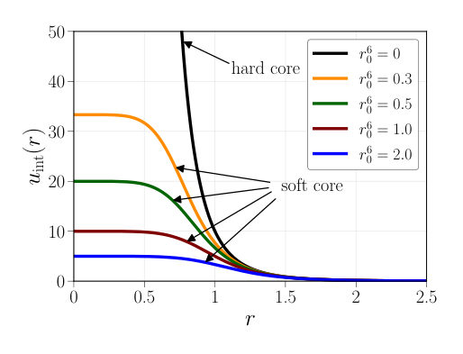
<figcaption class="paper-figure-caption"><b>Fig 1.</b> Figure 1. Interaction potential (3) for various r0 values (in the legend). For r0 ̸= 0, the inflection point of uint(r) falls at r = (5/7)1/6r0 = 0.9454 . . . r0.</figcaption>
</figure>
<figure class="paper-figure-card">
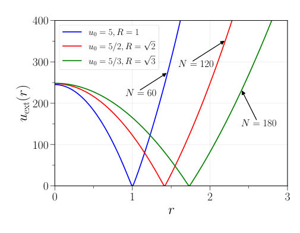
<figcaption class="paper-figure-caption"><b>Fig 2.</b> Figure 2. Trapping potential for the three system sizes con- sidered in this paper. Notice the vertical scale.</figcaption>
</figure>
<figure class="paper-figure-card">

<figcaption class="paper-figure-caption"><b>Fig 3.</b> Figure 3. N = 60 bosons: Integrated radial density n(r), plotted for λ = 0.3 and a few values of the softness parameter r6 0.</figcaption>
</figure>
<figure class="paper-figure-card">

<figcaption class="paper-figure-caption"><b>Fig 4.</b> Figure 4. N = 60 bosons: Four typical bead configurations (projection maps). (a) Solid bilayer (red: particles in the inner layer; blue: particles in the outer layer); (b) Icosahedral cluster solid; (c) Octahedral cluster supersolid; and (d) Superfluid.</figcaption>
</figure>
<figure class="paper-figure-card">

<figcaption class="paper-figure-caption"><b>Fig 5.</b> Figure 5. N = 60 bosons: Phase diagram at T = 1. The color palette of the circles is as follows: blue →solid bilayer (2-Sol); red →superfluid bilayer (2-SF); yellow →superfluid (SF); light green →cluster solid; dark green →bilayer with clusters in the first layer and isolated particles in the second layer (2-C+Sol); purple →supersolid. Background colors and phase boundaries are a guide for the eye.</figcaption>
</figure>
</div>

<p><strong>Summary.</strong> This paper uses advanced simulations and theoretical analysis to map the quantum phase diagram of bosons in a spherical trap as the interparticle interaction softens. By analyzing superfluidity, clustering, and symmetry via the Spherical Structure Factor, the authors demonstrate a rich spectrum of phases, notably confirming that supersolid behavior requires the presence of underlying cluster structures.</p>
<p><strong>Why it may be interesting.</strong> This work provides a detailed, tunable platform to study the crossover between different quantum regimes (e.g., crystalline solids to superfluid/supersolids) in a geometrically constrained environment, which is highly relevant for understanding quantum matter in optical lattices or traps.</p>
<details>
<summary>Detailed structure</summary>
<p><strong>Main problem.</strong> The study investigates how the equilibrium structure and superfluidity of spinless bosons trapped in a spherical shell change when the interparticle potential core is varied from hard-core to soft-core.</p>
<p><strong>Main result.</strong> The research confirms that supersolid states only emerge when clusters are present, and these supersolid phases are restricted to a specific range of particle masses, regardless of the system size tested.</p>
<p><strong>Method.</strong> The study employs Path Integral Monte Carlo (PIMC) simulations, supplemented by theoretical derivations relating correlation functions to the Spherical Structure Factor (SSF).</p>
<p><strong>Model / system.</strong> The system consists of spinless bosons confined in a broad spherical shell, governed by a Hamiltonian incorporating an external trapping potential and a tunable interparticle potential. The model bridges the physics of Helium-like atoms (hard-core) and Rydberg-dressed atoms (soft-core).</p>
<p><strong>Key observables.</strong> Superfluid fraction ($f_s$), radial distribution function ($g(r)$), Cycle Length Distribution ($P(L)$), and the Spherical Structure Factor ($S_l$).</p>
<p><strong>Important parameters / regimes.</strong> Core stiffness (tuned by $r_0$), particle mass ($\lambda$), and system size ($N=60, 120, 180$).</p>
<p><strong>Assumptions / limitations.</strong> The SSF derivation for clusters assumes Gaussian cluster centers at vertices of highly symmetric polyhedra (octahedron or icosahedron).</p>
<p><strong>Figures summary.</strong> Figures illustrate the radial density profile changing with interaction softness, and the SSF is shown to match theoretical predictions for icosahedral and octahedral cluster arrangements.</p>
<p><strong>Paper structure.</strong> The paper first establishes the physical model and simulation methods (PIMC) to map out the phase diagram based on interaction softness. It then develops the theoretical framework using spherical harmonics to calculate the SSF, confirming structural symmetries in the resulting phases.</p>
</details>
<details>
<summary>Abstract</summary>
<p>We study the low-temperature states of a system of spinless bosons trapped in a broad spherical shell. In our virtual (path-integral Monte Carlo) experiments, we specifically examine how the equilibrium structure and overall superfluidity of the system are affected by a change of the interparticle-potential core from hard to increasingly soft. In this manner we bridge the gap between the behaviors of two species of bosons: Helium-like atoms, which self-assemble into ordinary crystalline solids, and Rydberg-dressed atoms, which in simulation form cluster (super)solids. We also vary the particle mass, i.e., the quantumness of the system, so as to modify the relative stability of ``solid'' and fluid states. We thus find a whole spectrum of (finite-size) phases with a curved structure, including multilayer and cluster phases, as well as superfluids and single layer supersolids. In particular, we confirm that supersolids only occur in the presence of clusters. By considering three system sizes (from 60 to 180 particles), but rescaling the trap radius so that the density stays fixed, we verify that supersolid states only exist in the same range of particle masses. Our model serves as a platform to test how emergent properties are modified, in spherical geometry, in the crossover from atoms to dressed atoms.</p>
</details>
<p><sub><a href="#top">↑ back to top</a></sub></p>

<p><a id="paper-2610.29050"></a></p>
<h3 id="buffer-qubit-based-quantum-circuit-allocation-method-against-crosstalk-attacks"><a href="http://arxiv.org/abs/2610.29050v1">Buffer-Qubit-Based Quantum Circuit Allocation Method Against Crosstalk Attacks</a></h3>
<p><strong>Authors:</strong> Haruki Nakayama, Satoyuki Tsukano, Satoshi Kono, Keita Matsumoto, Toshio Mori, Takumi Oikawa, Ryo Uchida<br>
<strong>Type:</strong> experiment · <strong>Category:</strong> quantum information and computing · <strong>PDF:</strong> <a href="https://arxiv.org/pdf/2610.29050v1">https://arxiv.org/pdf/2610.29050v1</a><br>
<strong>Analysis basis:</strong> full PDF text, analyzed in chunks
<strong>Topic relevance:</strong> 🔥 <code>QC/QI experiment</code> <strong>4/5</strong></p>
<div class="figure-strip-hint">↔ Scroll figures horizontally</div>
<div class="paper-figures-scroll">
<figure class="paper-figure-card">

<figcaption class="paper-figure-caption"><b>Fig 1.</b> Fig. 1: A schematic illustration of a crosstalk attack in QMP, depicting how an attacker circuit can affect victim circuits via crosstalk on an 8-qubit device topology.</figcaption>
</figure>
<figure class="paper-figure-card">

<figcaption class="paper-figure-caption"><b>Fig 2.</b> Figure 2 shows an overview of the proposed method. We extend the QMP method of OQTOPUS [8]. Specifically, we introduce a set Vb of physical qubits that should be reserved as buffer qubits. Multiple quantum circuits are then sequentially allocated on the same chip, subject to the constraints that physical qubits corresponding to vertices in Vb cannot be used for allocation. Since the construction of Vb depends on the range of crosstalk attack effects, it is determined from experiments on the real quantum computer presented in Section IV-A. The proposed method augments the Subgraph Isomorphism Problem (SIP) formulation used in the existing method with additional constraints, which prohibit...</figcaption>
</figure>
<figure class="paper-figure-card">

<figcaption class="paper-figure-caption"><b>Fig 3.</b> Fig. 2: Illustration of the proposed circuit allocation procedure. For each user circuit, (A) a pattern graph Gi u is built from the transpiled circuit, and (B) Gi u is matched to a subgraph of the target graph Gi c, subject to the constraint that vertices corresponding to buffer qubits in Vb (marked with ×) are excluded from the mapping. After each allocation, unused qubits that fall within the crosstalk-affected range of the allocated circuit are added to Vb, and the procedure is repeated for the next circuit. The specific construction of Vb depends on the range of crosstalk effects; in this example, qubits adjacent to the allocated ones are added to Vb as one instance of such a...</figcaption>
</figure>
<figure class="paper-figure-card">

<figcaption class="paper-figure-caption"><b>Fig 4.</b> Fig. 3: Overview of the experiment for evaluating the effect of crosstalk attacks. (a) Device topology and the allocation of each circuit. (b) Detailed view of the attacker circuit. (c) Illustration of the experimental procedure.</figcaption>
</figure>
<figure class="paper-figure-card">

<figcaption class="paper-figure-caption"><b>Fig 5.</b> Fig. 5: Quantum circuit allocation for a single batch, in which 30 colored qubits were allocated to user jobs and 34 grayed qubits were reserved as buffer qubits.</figcaption>
</figure>
</div>

<p><strong>Summary.</strong> This paper introduces a buffer-qubit-based method to secure Quantum Multi-Programming (QMP) against crosstalk attacks on quantum processors. The technique dynamically reserves idle qubits around active circuits to suppress malicious interference. By implementing this in the OQTOPUS software and testing it on a real quantum device, the authors demonstrate a practical countermeasure for reliable quantum cloud services.</p>
<p><strong>Why it may be interesting.</strong> This work directly addresses hardware-level security and resource management in quantum cloud computing, which is crucial for scaling quantum algorithms beyond idealized models.</p>
<details>
<summary>Detailed structure</summary>
<p><strong>Main problem.</strong> Quantum Multi-Programming (QMP) is vulnerable to crosstalk attacks, where a malicious user disrupts other users' computations on a shared quantum chip.</p>
<p><strong>Main result.</strong> The proposed buffer-qubit allocation method successfully mitigates crosstalk by reserving idle qubits around allocated circuits, which was validated on a real superconducting quantum device.</p>
<p><strong>Method.</strong> The authors extended the OQTOPUS software by incorporating a buffer-qubit constraint into the circuit allocation process, formulated as a Subgraph Isomorphism Problem (SIP).</p>
<p><strong>Model / system.</strong> The work is performed on a real superconducting quantum computer, simulating QMP for multiple users on a single chip.</p>
<p><strong>Key observables.</strong> Energy relaxation ($T_1$) and dephasing ($T_2^*$) characteristics of qubits, particularly comparing measurements near an attacker circuit versus non-adjacent qubits.</p>
<p><strong>Important parameters / regimes.</strong> Crosstalk effects are observed to be localized to qubits immediately adjacent to the attacker circuit.</p>
<p><strong>Assumptions / limitations.</strong> The scheduler, transpiler, and allocator managed by the cloud service are assumed to be trusted, and the initial characterization of crosstalk effects determines the initial buffer set.</p>
<p><strong>Figures summary.</strong> Figures illustrate the schematic of a crosstalk attack, the proposed allocation procedure using buffer qubits, and the experimental setup for evaluating the attack effects on the device topology.</p>
<p><strong>Paper structure.</strong> The paper first identifies the QMP vulnerability to crosstalk, proposes the buffer-qubit allocation method integrated into OQTOPUS, presents experimental characterization of the attack effect on a real device, and finally validates the method's successful implementation.</p>
</details>
<details>
<summary>Abstract</summary>
<p>Quantum Multi-Programming (QMP) enables the simultaneous execution of quantum circuits from multiple users on a single quantum chip in cloud quantum computing services. However, QMP is vulnerable to crosstalk attacks, in which a malicious user deliberately induces crosstalk to disrupt other users' computations. As a countermeasure, prior work has proposed the use of buffer qubits, which remain idle and are allocated between quantum circuits to suppress the effect of crosstalk. Nevertheless, to the best of our knowledge, such countermeasures have not been publicly reported in production quantum cloud software. In this paper, we extend the QMP of OQTOPUS, open-source software that is already in production use for operating real quantum computers, with a buffer-qubit-based circuit allocation method. Experiments on a real device characterize the attack effect in terms of energy relaxation and dephasing, showing that observable degradation appears in dephasing characteristics of qubits adjacent to the attacker circuit. Based on this result, we release the proposed method as part of OQTOPUS and confirm that the buffer qubits are correctly reserved around the allocated circuits.</p>
</details>
<p><sub><a href="#top">↑ back to top</a></sub></p>

<p><a id="paper-2610.29986"></a></p>
<h3 id="meter-scale-quantum-interconnects-between-large-quantum-processors"><a href="http://arxiv.org/abs/2610.29986v1">Meter-scale quantum interconnects between large quantum processors</a></h3>
<p><strong>Authors:</strong> Neereja M. Sundaresan, Nicholas Cotaj, Yadav Prasad Kandel, Eric Lewandowski, Christian Robert Longton, Yves Martin, Jae-woong Nah, Kathryn Pooley, Martin Sandberg, Michael Scanlon, Chi Xiong, Emanuil Sashev Yanev, David Abraham, Abhinandan Antony, Vincent Arena, Nicholas Bornman, Khanh Dang, Oliver Dial, Christopher Guarino, Gabriel Haspil, Jared Hertzberg, Kentaro Heya, Swetha Kamlapurkar, Michael Karschner, George Keefe, Eric Liniger, Laura Luo, Thomas G. McConkey, David Olson, Jason Orcutt, Dmitry Ovchinnikov, Timothy Phung, Sankeerth Rajalingam, Michael Selvanayagam, William Shanks, Dongbing Shao, Abigail Shearrow, Adam Stabile, Jiri Stehlik, Joseph Suttle, Jeng-Bang Yau, Eric Zhang<br>
<strong>Type:</strong> experiment · <strong>Category:</strong> quantum information and computing · <strong>PDF:</strong> <a href="https://arxiv.org/pdf/2610.29986v1">https://arxiv.org/pdf/2610.29986v1</a><br>
<strong>Analysis basis:</strong> full PDF text, analyzed in chunks
<strong>Topic relevance:</strong> 🔥 <code>QC/QI experiment</code> <strong>4/5</strong></p>
<div class="figure-strip-hint">↔ Scroll figures horizontally</div>
<div class="paper-figures-scroll">
<figure class="paper-figure-card">

<figcaption class="paper-figure-caption"><b>Fig 1.</b> FIG. 1. Two Nighthawk R1 test modules connected by four L-couplers. a,b) Rendering and photograph of the dual-module assembly. c,d) Rendering and photograph of the spring-loaded cable holder, which installs two L-coupler connections at a time. e) For development speed, only a subset of qubits around the L-couplers is wired and measured. Solid outlined boxes are lattice qubits; the dashed box is one L-coupler element, which the inset expands: a dedicated grounded, frequency-tunable L-qubit, an i2m coupler, and the connection to the cable. f) Representative measurement of qubit-cable coupling for one L-coupler versus external flux. See Methods for details.</figcaption>
</figure>
<figure class="paper-figure-card">

<figcaption class="paper-figure-caption"><b>Fig 2.</b> FIG. 2. Magnetic sensitivity of aluminum cables and char- acterization of cable-chip connections. a) Qi of a standalone aluminum coax against frequency, for a series of fields applied while the cable cooled through its superconducting transi- tion, shaded light to dark from zero to 14 G and labelled at the extremes. Purple open circles give the median Qi across the 4.5–7.5 GHz band at each field, read against the upper axis. Orange triangles are a single shielded cable on the route used in the dual-module assembly. b) Green circles and open squares are two nominally identical standalone cable-to-chip join testers. Blue circles are the four cable modes of the dual- module assembly, inferred...</figcaption>
</figure>
<figure class="paper-figure-card">

<figcaption class="paper-figure-caption"><b>Fig 3.</b> FIG. 3. State transfer and distant CZ on L-couplers. a) Relay-based state transfer error per L-coupler, measured in both directions with network benchmarking, with the mean as a bar. Open triangles are the coherence limit of the model in Methods, which takes the shorter measured T1 and the shorter T ∗ 2 of each L-qubit pair together with the measured L-coupler mode T1 and T ∗ 2 ; open diamonds are the same model with the L-qubits held at T1 = T ∗ 2 = 100 µs. b) Distant CZ error per gate, labelled by the outer lattice qubits the gate acts on with the mediating L-coupler in parentheses. The stacked bar is the summed constituent error budget for CZ111–237, beside its measured point. Inset: the...</figcaption>
</figure>
</div>

<p><strong>Summary.</strong> This paper reports on the creation and testing of meter-scale quantum interconnects using superconducting qubits. By successfully implementing L-couplers between two large quantum processors, the authors demonstrated high-fidelity quantum state transfer and distant two-qubit gates. This work establishes a critical, practical pathway toward building modular, large-scale quantum computers.</p>
<p><strong>Why it may be interesting.</strong> This work provides crucial experimental benchmarks for quantum networking, directly addressing the engineering bottleneck of connecting quantum modules, which is highly relevant for theorists modeling scalable quantum architectures.</p>
<details>
<summary>Detailed structure</summary>
<p><strong>Main problem.</strong> The primary challenge addressed is developing reliable, long-distance quantum interconnects (L-couplers) necessary to scale quantum processors beyond single chip modules.</p>
<p><strong>Main result.</strong> The researchers successfully demonstrated high-fidelity state transfer (99.00% mean) and distant CZ gates (94.75% mean) across four meter-scale L-couplers, proving a practical path for modular quantum computing.</p>
<p><strong>Method.</strong> The experiment involves physically assembling superconducting qubit processors connected by custom L-couplers containing superconducting coax, and then measuring quantum gate fidelities and state transfer efficiencies.</p>
<p><strong>Model / system.</strong> The system uses superconducting qubits (IBM Nighthawk R1) connected via L-couplers, which incorporate frequency-tunable L-qubits and RF-SQUID couplers, spanning superconducting aluminum coax over meter-scale distances.</p>
<p><strong>Key observables.</strong> State transfer fidelity, distant CZ gate fidelity, Bell pair fidelity, and GHZ state fidelity.</p>
<p><strong>Important parameters / regimes.</strong> Meter-scale distances, mean state transfer fidelity of 99.00%, and mean distant CZ fidelity of 94.75%.</p>
<p><strong>Assumptions / limitations.</strong> The fidelity measurements are limited by readout error, and the performance relies on the successful physical integration of multiple components (qubits, couplers, and cables).</p>
<p><strong>Figures summary.</strong> Figures illustrate the dual-module assembly with four L-couplers, showing the physical components and the measured performance metrics for state transfer and distant gates.</p>
<p><strong>Paper structure.</strong> The paper progresses from identifying the need for interconnects, detailing the physical construction of the L-couplers, characterizing the link performance via state transfer and distant gates, and concluding with demonstrations of multi-pair entanglement generation.</p>
</details>
<details>
<summary>Abstract</summary>
<p>Modular quantum architecture requires long-distance quantum interconnects to stitch together individual processor modules. Such interconnects, long-distance couplers or L-couplers, must support coherent quantum operation over meter-scale distances and scale to multiple connections between any two modules. Here we demonstrate four L-couplers operating between two 120-qubit IBM Nighthawk R1 superconducting qubit processors. Each L-coupler joins two Nighthawk lattice qubits through two frequency-tunable L-qubits, two RF-SQUID based "i2m" couplers, and 80 cm of superconducting aluminum coax. Each cable installs perpendicular to the processor surface, to enable denser connections, and is joined to the chip by an indium-to-indium room temperature pressure bond made after both modules were mounted. L-coupler modes near 5 GHz, with internal quality factors of 0.86 to 1.09e6, carry relay-based state transfer at a mean network benchmarking fidelity of 99.00%, with a best link of 99.29 +/- 0.07%. We then realize distant CZ gates between lattice qubits in separate modules at a mean fidelity of 94.75%, with a best link of 96.42 +/- 0.28%, and use them to generate entangled states across the two processors, including a demonstration of simultaneous Bell pair generation using two adjacent L-couplers. These four high-fidelity L-couplers establish a practical path to scalable quantum interconnects for modular quantum computing.</p>
</details>
<p><sub><a href="#top">↑ back to top</a></sub></p>

<p><a id="paper-2610.29801"></a></p>
<h3 id="closing-of-density-wake-in-concentrated-colloidal-suspensions-two-regimes-governed-by-compressibility-friction-and-self-propulsion"><a href="http://arxiv.org/abs/2610.29801v1">Closing of density wake in concentrated colloidal suspensions: two regimes governed by compressibility, friction, and self-propulsion</a></h3>
<p><strong>Authors:</strong> Guillaume Duprez, Gianmarco Spera, Benjamin Buhl, François Graner, Vincent Démery, Cécile Cottin-Bizonne, Hélène Delanoë-Ayari, Mathieu Leocmach<br>
<strong>Type:</strong> both · <strong>Category:</strong> statistical mechanics · <strong>PDF:</strong> <a href="https://arxiv.org/pdf/2610.29801v1">https://arxiv.org/pdf/2610.29801v1</a><br>
<strong>Analysis basis:</strong> full PDF text, analyzed in chunks
<strong>Topic relevance:</strong> <code>Frenkel-Kontorova</code> <strong>3/5</strong> · <code>driven-dissipative phase transition</code> <strong>3/5</strong> · <code>non-equilibrium universality</code> <strong>3/5</strong> · <code>Keldysh / 2PI / non-Gaussian methods</code> <strong>2/5</strong> · <code>analog quantum simulation</code> <strong>2/5</strong> · <code>methods for driven-dissipative</code> <strong>2/5</strong> · <code>correlated / nonlocal dissipation</code> <strong>1/5</strong> · <code>quantum measurements</code> <strong>1/5</strong> · <code>scars &amp; prethermalization</code> <strong>1/5</strong></p>
<div class="figure-strip-hint">↔ Scroll figures horizontally</div>
<div class="paper-figures-scroll">
<figure class="paper-figure-card">

<figcaption class="paper-figure-caption"><b>Fig 1.</b> FIG. 1. (a) Sketch of the experimental setup. Janus colloids form a monolayer that is sedimented by tilting the experimental setup by a small angle θ. A micromanipulator holds the obstacle that dips in the monolayer and is dragged at constant velocity along⃗x. (b) Detail of a dark-field microscopy image of the sedimented monolayer in the passive case. In-plane gravity ⃗g∗acts along⃗y. The orange arrow represents the velocity at which the obstacle is dragged (from left to right, in all figures). The obstacle in motion appears as a circular zone depleted in colloids. The density wake is visible as a low-density area behind the obstacle.</figcaption>
</figure>
<figure class="paper-figure-card">

<figcaption class="paper-figure-caption"><b>Fig 2.</b> FIG. 2. Experimental micrograph of the wake for two different ob- stacle radii: (a) R = 8.5µm and (b) R = 42µm, at roughly the same density (φ = 0.767±0.025 and 0.758±0.031), and the same veloc- ity Uobs = 5µm/s. The two pictures are scaled so that R appears the same to highlight the nonlinear dependence of wake length on obsta- cle size.</figcaption>
</figure>
<figure class="paper-figure-card">

<figcaption class="paper-figure-caption"><b>Fig 3.</b> FIG. 3. (a) Map of the packing fraction time-averaged in the frame of the obstacle in a passive case where Pe ≈200, see colour bar below. A Gaussian smoothing of size a/2 has been applied. The excluded zone is shown as a red circle of radius R. The white disk represents the obstacle of radius R −a. (b) Profiles along y at various x positions behind the obstacle indicated on (a) and (c) by vertical dashed lines of corresponding colours. A Gaussian smoothing of size a has been applied. (c) Profile along x that is y-averaged on |y| &lt; 2a, i.e. dotted black lines in (a) and (b). A baseline measured at rest has been removed. The horizontal black dotted line is the density at rest at the position...</figcaption>
</figure>
<figure class="paper-figure-card">

<figcaption class="paper-figure-caption"><b>Fig 4.</b> Figure 2 displays typical snapshots of a moving obstacle in a passive sediment. At all considered experimental condi- tions, we observe a density wake with an almost empty zone behind the obstacle. However, the length of this wake changes by about two orders of magnitude in units of the particle size.</figcaption>
</figure>
<figure class="paper-figure-card">

<figcaption class="paper-figure-caption"><b>Fig 5.</b> FIG. 4. (a) Experimental closing length as a function of packing frac- tion for two obstacle velocities in the passive case for small obstacles (8µm ≤R ≤10µm). (b) Same data for the closing time. (c) Closing time from simulations as a function of packing fraction for two ob- stacle velocities in the passive case. Solid black curve corresponds to γR2(1−φ)2. (d) Same data with the inverse scaling in Uobs. Dashed black line is an affine guide for the eye.</figcaption>
</figure>
</div>

<p><strong>Summary.</strong> This work experimentally and numerically investigates how a density wake closes behind a moving object in dense colloidal suspensions. It establishes that the wake dynamics are fundamentally controlled by the suspension's compressibility, revealing distinct scaling laws for passive and active matter. The findings provide a framework to interpret the complex effects of self-propulsion in dense, non-equilibrium particle systems.</p>
<p><strong>Why it may be interesting.</strong> While focused on classical soft matter, the concepts of non-equilibrium steady states, effective interactions due to activity, and density fluctuations in confined/driven systems are highly relevant to understanding many-body dynamics in quantum many-body systems.</p>
<details>
<summary>Detailed structure</summary>
<p><strong>Main problem.</strong> The study investigates the closing of the density wake created when an obstacle moves through a dense, compressible colloidal suspension, addressing limitations of previous dilute or far-field theories.</p>
<p><strong>Main result.</strong> The wake closing exhibits two distinct regimes governed by compressibility, and the influence of self-propulsion can be understood as an effective increase in the obstacle size within an active bath.</p>
<p><strong>Method.</strong> The research combines experimental measurements using Janus colloids with numerical simulations and analytical derivations based on continuum models.</p>
<p><strong>Model / system.</strong> The system is a 2D suspension of colloidal particles, which can be modeled as thermal (passive) or self-propelled (active) Brownian particles in a dense state.</p>
<p><strong>Key observables.</strong> Density perturbation/wake shape, characteristic wake closing length ($\lambda$), and the density profile ($
ho$).</p>
<p><strong>Important parameters / regimes.</strong> Packing fraction ($\phi$), compressibility factor ($Z$), self-propulsion velocity ($v_p$), and persistence time ($   au_r$).</p>
<p><strong>Assumptions / limitations.</strong> The analysis relies on continuum descriptions, assuming the particle current is driven by pressure gradients against friction, and fitting the wake decay with an exponential function.</p>
<p><strong>Figures summary.</strong> Figures show experimental setups, time-averaged density maps illustrating the wake, and quantitative plots demonstrating the non-monotonic dependence of wake length on density for both passive and active cases.</p>
<p><strong>Paper structure.</strong> The paper first establishes the physical problem by reviewing the wake formation. It then analyzes the passive case, identifying two density regimes governed by compressibility. Finally, it extends this understanding to active suspensions, quantifying the role of self-propulsion.</p>
</details>
<details>
<summary>Abstract</summary>
<p>When an obstacle moves through a compressible medium, it creates a density perturbation. Theoretical arguments regarding the shape of this density wake in Brownian suspensions either suppose infinite dilution or describe only the far field. Here, we study via experiments and numerical simulations the closing of the density perturbation just behind a circular obstacle in dense 2D suspensions of particles that are thermal or self-propelled. In the thermal case, we show that the characteristic length of the wake is a non-monotonic function of density, decreasing then increasing. We rationalise the scalings of both regimes by analytical arguments that highlight the role of the compressibility factor of the suspension. Based on this new understanding of the passive case, we show that the influence of self-propulsion observed in experiments and simulations can be understood as if the obstacle is effectively larger in an active bath, with non-trivial and distinct roles of the self-propulsion velocity and of the persistence time.</p>
</details>
<p><sub><a href="#top">↑ back to top</a></sub></p>

<p><a id="paper-2610.30062"></a></p>
<h3 id="hydrodynamic-description-of-correlation-matrix-eigenvalues-in-a-finite-temperature-expanding-free-fermionic-gas"><a href="http://arxiv.org/abs/2610.30062v1">Hydrodynamic description of correlation matrix eigenvalues in a finite temperature expanding free fermionic gas</a></h3>
<p><strong>Authors:</strong> Atharva Naik, Madhumita Saha, David A. Huse, Manas Kulkarni, Abhishek Dhar<br>
<strong>Type:</strong> theory · <strong>Category:</strong> statistical mechanics · <strong>PDF:</strong> <a href="https://arxiv.org/pdf/2610.30062v1">https://arxiv.org/pdf/2610.30062v1</a><br>
<strong>Analysis basis:</strong> full PDF text, analyzed in chunks
<strong>Topic relevance:</strong> <code>Full counting statistics</code> <strong>3/5</strong> · <code>Keldysh / 2PI / non-Gaussian methods</code> <strong>3/5</strong> · <code>methods for driven-dissipative</code> <strong>3/5</strong> · <code>correlated / nonlocal dissipation</code> <strong>2/5</strong> · <code>driven-dissipative phase transition</code> <strong>2/5</strong> · <code>non-equilibrium universality</code> <strong>2/5</strong> · <code>analog quantum simulation</code> <strong>1/5</strong> · <code>quantum measurements</code> <strong>1/5</strong> · <code>scars &amp; prethermalization</code> <strong>1/5</strong></p>
<div class="figure-strip-hint">↔ Scroll figures horizontally</div>
<div class="paper-figures-scroll">
<figure class="paper-figure-card">

<figcaption class="paper-figure-caption"><b>Fig 1.</b> FIG. 1. |ϕα(x, t)|2 vs x for α = (−80, −π</figcaption>
</figure>
<figure class="paper-figure-card">

<figcaption class="paper-figure-caption"><b>Fig 2.</b> FIG. 2. Eigenvalue profile plotted at different times for (a) the system part of the correlation matrix and (b) the reservoir part of the correlation matrix. The symbols correspond to numerically obtained eigenvalues while the red dotted line are ones predicted by hydrodynamics. The conformal defect with gc = 0.4 was considered with other parameters, β = 1, µ = 2 and LS = 500.</figcaption>
</figure>
<figure class="paper-figure-card">

<figcaption class="paper-figure-caption"><b>Fig 3.</b> FIG. 3. Comparison between vN entropy and cumulants obtained using exact numerics and hydrodynamical equations. The red squares and the blue circles correspond to the results from exact microscopic and hydrodynamic, respectively, for the system part. Green triangles and orange crosses correspond to the results from exact microscopics and hydrodynamics, respectively, for the reservoir part. Here, LS = 50, β = 1, µ = 1 and gc = 0.4.</figcaption>
</figure>
<figure class="paper-figure-card">

<figcaption class="paper-figure-caption"><b>Fig 4.</b> FIG. 4. Difference between the exact vN entropy (numeri- cally computed) and the hydrodynamic entropy as a function of time for a setup with a conformal defect with different coupling strengths at β = ∞and LS = 500. A logarithmic growth is seen. For gc = 1/2 = g , the difference 1 6 log(t) [43], which is the well known result for entanglement growth in the defectless case. Inset: The prefactor of the log(t) growth is plotted as a function of defect strength gc.</figcaption>
</figure>
</div>

<p><strong>Summary.</strong> This paper introduces a hydrodynamic framework to determine the eigenvalues of the correlation matrix for an expanding free fermionic gas. By solving the collisionless Boltzmann equation, the authors derive analytic expressions for the system and reservoir entropies. This method successfully reproduces known results for entanglement entropy, providing a semiclassical tool for analyzing non-equilibrium quantum dynamics.</p>
<p><strong>Why it may be interesting.</strong> This work provides a powerful, analytically tractable hydrodynamic tool to study entanglement and thermalization dynamics in open quantum systems, which is highly relevant for understanding quantum information flow in realistic physical settings.</p>
<details>
<summary>Detailed structure</summary>
<p><strong>Main problem.</strong> The paper develops a hydrodynamic description to calculate the eigenvalues of the microscopic correlation matrix for a free fermionic gas undergoing free expansion at non-zero temperature.</p>
<p><strong>Main result.</strong> The hydrodynamic approach successfully predicts the time evolution of the von Neumann entropy and Full Counting Statistics for both the system and the reservoir, showing agreement with exact results for various defect types.</p>
<p><strong>Method.</strong> The core method involves applying semiclassical hydrodynamics, solving the collisionless Boltzmann equation for the phase space density, and relating the resulting phase space density to the correlation matrix eigenvalues via the Yang-Yang formula.</p>
<p><strong>Model / system.</strong> The system is a one-dimensional free fermionic gas modeled as a finite system coupled to a semi-infinite reservoir via a point defect. The dynamics are governed by the free fermionic Hamiltonian, and the analysis covers different defect types (conformal, hopping, density).</p>
<p><strong>Key observables.</strong> Correlation matrix eigenvalues ($\xi_S, \xi_R$), von Neumann entropy ($S_D^{	ext{v}}$), and Full Counting Statistics (FCS).</p>
<p><strong>Important parameters / regimes.</strong> Temperature ($eta$), time ($t$), and defect coupling strengths ($g_c$).</p>
<p><strong>Assumptions / limitations.</strong> The derivation relies on a semiclassical approximation based on a wave-packet picture, and the leading-order hydrodynamic formula neglects small quantum fluctuations.</p>
<p><strong>Figures summary.</strong> Figures compare numerical results against hydrodynamic predictions for eigenvalue profiles, von Neumann entropy, and FCS over time for various defect strengths and temperatures.</p>
<p><strong>Paper structure.</strong> The paper builds from the initial problem of calculating correlation matrix eigenvalues to deriving the hydrodynamic equations from the phase space density evolution. It then applies this framework to calculate the entropy for different defect models, comparing the results systematically.</p>
</details>
<details>
<summary>Abstract</summary>
<p>A recent work considered the Page curve for entanglement entropy of a freely expanding one-dimensional Fermi gas starting from a finite box (the system) in a zero-temperature initial state that then expands in to a semi-infinite vacuum (the environment). For the case with a single defect at the system-environment junction, it was shown that the Yang-Yang entropy of the system computed from semiclassical hydrodynamics agrees with the microscopically computed entanglement entropy, yielding the Page curve. On the other hand, the environment Yang-Yang entropy showed a monotonic increase. Here, we propose a hydrodynamic description to obtain the eigenvalues of the microscopic correlation matrix for a nonzero temperature freely-expanding Fermi gas. For the system, the phase space density directly gives the correlation matrix eigenvalues and thus, via the Yang-Yang formula, yields the von-Neumann entropy. For the reservoir, a modification of the phase space density is required in the Yang-Yang formula, to incorporate coherences, in order to reproduce accurately the entropy. The hydrodynamic description of correlation matrix eigenvalues also leads to a Levitov-Lesovik type formula for the full-counting-statistics for a finite system in the transient regime. We provide a heuristic derivation of the correlation matrix eigenvalues based on a semiclassical wave-packet picture.</p>
</details>
<p><sub><a href="#top">↑ back to top</a></sub></p>

<p><a id="paper-2610.28760"></a></p>
<h3 id="dynamical-tunneling-blockade-in-layer-pseudospin-ferromagnets"><a href="http://arxiv.org/abs/2610.28760v1">Dynamical Tunneling Blockade in Layer-Pseudospin Ferromagnets</a></h3>
<p><strong>Authors:</strong> Lingxian Kong, Yuta Murakami, Ryuichi Shindou, Zhiyuan Sun<br>
<strong>Type:</strong> theory · <strong>Category:</strong> strongly correlated electrons · <strong>PDF:</strong> <a href="https://arxiv.org/pdf/2610.28760v1">https://arxiv.org/pdf/2610.28760v1</a><br>
<strong>Analysis basis:</strong> full PDF text, analyzed in chunks
<strong>Topic relevance:</strong> <code>Keldysh / 2PI / non-Gaussian methods</code> <strong>3/5</strong> · <code>driven-dissipative phase transition</code> <strong>3/5</strong> · <code>methods for driven-dissipative</code> <strong>3/5</strong> · <code>non-equilibrium universality</code> <strong>3/5</strong> · <code>analog quantum simulation</code> <strong>1/5</strong> · <code>correlated / nonlocal dissipation</code> <strong>1/5</strong> · <code>quantum measurements</code> <strong>1/5</strong> · <code>scars &amp; prethermalization</code> <strong>1/5</strong></p>
<div class="figure-strip-hint">↔ Scroll figures horizontally</div>
<div class="paper-figures-scroll">
<figure class="paper-figure-card">

<figcaption class="paper-figure-caption"><b>Fig 1.</b> FIG. 1. (a) Double-layer device with the two layers connected to leads at chemical potentials µ↑and µ↓and separated by a tunneling barrier of thickness d. The gate voltage VG applies an out-of-plane electric field. (b) The dc interlayer current density Idc (in units of IJ) as the bias voltage µ is swept upward for systems without val- ley degeneracy. Red circles are numerical results while green and blue curves are analytical results. The low-bias state has a static layer pseudospin n (black arrow in the left inset, the Bloch sphere of n with the north/south pole corresponding to the macroscopic state |↑⟩/|↓⟩and the dashed circle being the equator at nz = 0), while the high-bias state has a...</figcaption>
</figure>
<figure class="paper-figure-card">

<figcaption class="paper-figure-caption"><b>Fig 2.</b> FIG. 2. Time evolution of Θ toward the stable state with initial con- ditions Θ = π/2, θ = π/2, and ϕ = 0 at µ = 4c0/Γ. The blue curve is the numerical result, the red curve is the analytical result from Eq. (12), and the orange dashed horizontal line is the stable value Θ = π −ϵ in Eq. (13). The parameters are the same as those in Fig. 1(c).</figcaption>
</figure>
<figure class="paper-figure-card">

<figcaption class="paper-figure-caption"><b>Fig 3.</b> FIG. 4. (a) Tunneling blockade transitions for the generic tunneling matrix X = diag(1, 1 −ζ). Each curve plots the effective tunneling amplitude Z ≡|⟨1|X|2⟩| for a given ζ as a function of the bias volt- age during an upward sweep. (b) Same as (a) but for the dc interlayer current density Idc/IJ. Within numerical tolerance, both Z and the current become time independent after relaxation. The parameters c0, Γ and β are the same as those in Fig. 1(c).</figcaption>
</figure>
<figure class="paper-figure-card">

<figcaption class="paper-figure-caption"><b>Fig 4.</b> FIG. 3. The dc interlayer current as a function of µ for systems (a) without and (b) with valley degeneracy. The red circles and blue squares show upward and downward bias sweeps, respectively. The current density is expressed in units of IJ. The parameters are the same as those in Figs. 1(b) and 1(c).</figcaption>
</figure>
<figure class="paper-figure-card">

<figcaption class="paper-figure-caption"><b>Fig 5.</b> FIG. 1: Effective gauge potential at/∆versus bias µ/∆for X = diag(1, 1 −ζ) and ζ = 0, 0.25, 0.5, 0.75, 1. The upward sweeps use the same converged states and color convention as Fig. 4 of the main-text end matter, with c0/∆= 0.005, β = 0.1, and Γ = 0.2. For all curves, the gauge potential at becomes time independent after relaxation, within numerical tolerance.</figcaption>
</figure>
</div>

<p><strong>Summary.</strong> This theoretical work analyzes how interlayer tunneling in layer-pseudospin ferromagnets behaves under an applied voltage bias. The key finding is that when valley degeneracy is present, high bias drives the system into a dynamical tunneling blockade. This blockade suppresses the DC current, providing a distinct signature compared to simpler, valley-less models.</p>
<p><strong>Why it may be interesting.</strong> The interplay between spin/pseudospin dynamics (LLG) and charge transport (tunneling current) in a correlated electron system is highly relevant to understanding novel electronic states in 2D materials and topological systems.</p>
<details>
<summary>Detailed structure</summary>
<p><strong>Main problem.</strong> The study investigates the non-equilibrium steady states of layer-pseudospin ferromagnets driven by an interlayer voltage bias, focusing on the role of valley degeneracy.</p>
<p><strong>Main result.</strong> In the presence of valley degeneracy and high bias, the system undergoes a dynamical tunneling blockade, forcing the valley pseudospins into an antiparallel configuration, which sharply suppresses the DC tunneling current.</p>
<p><strong>Method.</strong> The analysis employs the Landau-Lifshitz-Gilbert (LLG) equation for the layer-pseudospin, coupled with spinor equations and Green's function techniques to calculate current response functions.</p>
<p><strong>Model / system.</strong> The system is a double-layer ferromagnet with narrow bands, modeled by layer-pseudospin and valley-pseudospin order parameters. The dynamics are governed by an energy functional including anisotropy, polarization, and Josephson tunneling terms.</p>
<p><strong>Key observables.</strong> Interlayer tunneling current density ($I(t)$), DC tunneling current ($I_{dc}$), and the time-averaged valley overlap ($\langle Z 
angle$).</p>
<p><strong>Important parameters / regimes.</strong> Interlayer voltage bias ($\mu$), valley anisotropy strength ($K$), and the tunneling amplitude ($c_0$).</p>
<p><strong>Assumptions / limitations.</strong> The LLG equation is used for dynamics, and approximations involve separating slow evolution from fast oscillations, as well as using Green's function techniques for current calculation.</p>
<p><strong>Figures summary.</strong> Figures illustrate the $I_{dc}$ vs. bias ($\mu$) characteristics for both valley-less and valley-degenerate cases, showing the transition to blockade in the latter. Other figures show the effective gauge potential and time-averaged valley overlap.</p>
<p><strong>Paper structure.</strong> The paper progresses by first establishing the LLG dynamics for the layer-pseudospin, then incorporating valley degrees of freedom, and finally analyzing the high-bias regime to derive the condition and consequences of the dynamical tunneling blockade.</p>
</details>
<details>
<summary>Abstract</summary>
<p>Double-layer systems with narrow or flat electronic bands may exhibit spontaneous interlayer coherence, described by a layer-pseudospin ferromagnetic order parameter. In modern realizations of layer-pseudospin ferromagnets, the electrons carry additional valley degeneracies, endowing each layer with a valley-pseudospin degree of freedom. We study their nonequilibrium steady states driven by a static interlayer voltage bias in the presence of interlayer tunneling. While in the low-bias regime, the system is in a static state with parallel valley pseudospins between the two layers, we show that in the high-bias regime, the dynamical precession of the layer-pseudospin stabilizes the valley pseudospins in the antiparallel configuration, strongly suppressing the interlayer tunneling. This dynamical tunneling blockade leads to an absence of ac current and a sharp drop of the dc tunneling current to a tiny value, in stark contrast to conventional quantum Hall double layers.</p>
</details>
<p><sub><a href="#top">↑ back to top</a></sub></p>

<p><a id="paper-2610.29601"></a></p>
<h3 id="stochastic-resonance-in-time-delayed-bistable-active-particles"><a href="http://arxiv.org/abs/2610.29601v1">Stochastic resonance in time-delayed bistable active particles</a></h3>
<p><strong>Authors:</strong> Antonio A. Valido, Mattia Coccolo, Miguel A. F. Sanjuán<br>
<strong>Type:</strong> theory · <strong>Category:</strong> statistical mechanics · <strong>PDF:</strong> <a href="https://arxiv.org/pdf/2610.29601v1">https://arxiv.org/pdf/2610.29601v1</a><br>
<strong>Analysis basis:</strong> full PDF text, analyzed in chunks
<strong>Topic relevance:</strong> <code>Keldysh / 2PI / non-Gaussian methods</code> <strong>3/5</strong> · <code>driven-dissipative phase transition</code> <strong>3/5</strong> · <code>methods for driven-dissipative</code> <strong>3/5</strong> · <code>non-equilibrium universality</code> <strong>3/5</strong> · <code>quantum measurements</code> <strong>2/5</strong> · <code>Frenkel-Kontorova</code> <strong>1/5</strong> · <code>correlated / nonlocal dissipation</code> <strong>1/5</strong></p>
<div class="figure-strip-hint">↔ Scroll figures horizontally</div>
<div class="paper-figures-scroll">
<figure class="paper-figure-card">

<figcaption class="paper-figure-caption"><b>Fig 1.</b> FIG. 1. SPA as a function of the normalized active-noise strength Dan. The upper row corresponds to the underdamped regime, µ ≃ p</figcaption>
</figure>
<figure class="paper-figure-card">

<figcaption class="paper-figure-caption"><b>Fig 2.</b> FIG. 2. (Left) Lowest non-vanishing eigenvalue as a function of the normalized active-noise strength Dan for different values of the active-noise correlation time with vanishing white-noise strength Dwn = 0 and time delay τ = 0. The inset shows the SPA returned by the purely white-noise case, which identifies with the passive bistable particle scenario. (Central) Lowest non-vanishing eigenvalue as a function of Dan for different values of the white-noise strength with fixed τan = 0.14mµ−1 and τ = 0. (Right) Similarly, Lowest non-vanishing eigenvalue for different values of the time delay with τan = 0 and Dwn = 0. We have fixed: Ω= 0.01 Hz, α = 2.3 kg/s2, γ = 0.2 kg/s2, β = 0.01 kg/(ms)2, µ...</figcaption>
</figure>
<figure class="paper-figure-card">

<figcaption class="paper-figure-caption"><b>Fig 3.</b> Figure 3 presents the SPA as a function of the active-noise strength for different values of the active-noise correlation time, the time delay, and the white-noise strength. In all cases, the characteristic non-monotonic dependence associated with stochastic resonance is observed, with the resonance peak occurring at intermediate values of the normalized active-noise strength,</figcaption>
</figure>
<figure class="paper-figure-card">

<figcaption class="paper-figure-caption"><b>Fig 4.</b> FIG. 3. SPA as a function of the normalized active-noise strength. The left panel illustrates the effect of the active-noise correlation time, with τanµ/m = 0.0014, 0.014, 0.14, τ = 0, and Dwn = 0. The center panel shows the effect of the white-noise strength, with Dwn/τan = 0.01, 0.1, 0.5, τan = 0.1, and τ = 0. The right panel illustrates the effect of the time delay, with γτ/µ ≃1.4 × 10−5, 0.071, 0.143, τan = 10−9, and Dwn = 0. The remaining parameters are Ω= 0.01 Hz, α = 2.3 kg s−2, γ = 0.2 kg s−2, β = 0.01 kg m−2 s−2, µ = 1.4 kg s−1, m = 1 kg, and F = 0.01 N. Error bars indicate the standard error of the mean (SEM) computed across independent simulation blocks. The thicker curves...</figcaption>
</figure>
<figure class="paper-figure-card">

<figcaption class="paper-figure-caption"><b>Fig 5.</b> FIG. 4. Lowest non-vanishing eigenvalue as a function of the normalized active-noise strength. The left panel illustrates the effect of the active-noise correlation time, with τanµ/m = 0.0014, 0.014, 0.14, τ = 0, and Dwn = 0. The center panel shows the effect of the white-noise strength, with Dwn/τan = 0.01, 0.1, 0.5, τan = 0.1, and τ = 0. The right panel illustrates the effect of the time delay, with γτ/µ ≃1.4 × 10−5, 0.071, 0.143, τan = 10−9, and Dwn = 0. The remaining parameters are Ω= 0.01 Hz, α = 2.3 kg s−2, γ = 0.2 kg s−2, β = 0.01 kg m−2 s−2, µ = 1.4 kg s−1, and m = 1 kg. The horizontal dashed line indicates the stochastic-resonance matching condition λac = 2Ω/π.</figcaption>
</figure>
</div>

<p><strong>Summary.</strong> This work analyzes stochastic resonance in an active particle system subjected to time-delayed feedback and multiple noise sources. Using linear-response theory, the authors derive analytical predictions for the resonance behavior, revealing that active noise correlation time can enhance the effect, contrary to simpler models. The findings highlight the complex interplay between inertia, activity, and time delays in non-equilibrium physics.</p>
<p><strong>Why it may be interesting.</strong> The inclusion of active noise and time-delayed feedback moves the study beyond standard passive, thermal systems, offering insights into non-equilibrium dynamics relevant to active matter and open quantum systems.</p>
<details>
<summary>Detailed structure</summary>
<p><strong>Main problem.</strong> The paper investigates stochastic resonance (SR) in a complex, non-equilibrium system involving inertia, active fluctuations, time-delayed feedback, and environmental noise.</p>
<p><strong>Main result.</strong> The study shows that active noise correlation time can enhance the SR response, while white noise weakens it; the analysis provides new insight into the combined role of inertia, activity, and time delay in non-equilibrium SR.</p>
<p><strong>Method.</strong> The authors developed a perturbative theory using the WKB approximation combined with linear-response theory to derive analytical expressions for the escape rate and spectral power amplification.</p>
<p><strong>Model / system.</strong> The system is an underdamped active particle (Ornstein--Uhlenbeck process) confined in a bistable potential that includes a time-delayed feedback term. The dynamics are driven by both non-thermal active noise and environmental white noise.</p>
<p><strong>Key observables.</strong> Escape rate and Spectral Power Amplification (SPA).</p>
<p><strong>Important parameters / regimes.</strong> Active noise correlation time ($    au_{an}$), environmental noise intensity ($D_{wn}$), and the time delay ($ au$).</p>
<p><strong>Assumptions / limitations.</strong> The analysis is restricted to the active-noise-dominated regime and relies on perturbative approximations valid for short delays and weak noise intensities.</p>
<p><strong>Figures summary.</strong> Not specified (Bibliography only in the provided notes).</p>
<p><strong>Paper structure.</strong> The paper builds from defining the complex stochastic differential equations governing the particle's motion to developing the perturbative theory, deriving analytical expressions for observables like SPA, and finally comparing these theoretical predictions with numerical simulations.</p>
</details>
<details>
<summary>Abstract</summary>
<p>We investigate analytically and numerically stochastic resonance in an underdamped active (Ornstein--Uhlenbeck) particle confined in a bistable potential with time-delayed feedback and subjected to an additional (non-thermal) white-noise source. Restricting the analysis to the active-noise-dominated bistable regime, with sufficiently short delay and active-noise correlation times, we develop a perturbative theory that yields analytical expressions for both the escape rate and the spectral power amplification within the framework of linear-response theory, without invoking detailed balance. The analytical predictions are in qualitative agreement with direct numerical simulations throughout the perturbative regime. We show that a moderate increase in the active-noise correlation time can enhance the stochastic-resonance response, in marked contrast to previous results for overdamped passive systems driven by colored noise. Conversely, the addition of white noise weakens the resonant response and shifts its optimum toward lower active-noise intensities. Time-delayed feedback further alters the matching condition between the escape rate and the driving frequency while preserving the resonant mechanism. Beyond the perturbative regime, we find that finite-memory effects progressively broaden the resonance profile and substantially decrease its amplitude. Overall, these results provide new insight into the combined role of inertia, activity, environmental fluctuations, and time delayed feedback in stochastic resonance in nonequilibrium systems.</p>
</details>
<p><sub><a href="#top">↑ back to top</a></sub></p>

<p><a id="paper-2610.29615"></a></p>
<h3 id="mechanism-of-delayed-elastic-state-absorption-versus-fatigue-failure-in-cyclic-shear-of-amorphous-materials"><a href="http://arxiv.org/abs/2610.29615v1">Mechanism of delayed elastic state absorption versus fatigue failure in cyclic shear of amorphous materials</a></h3>
<p><strong>Authors:</strong> Samuel B. Walker, Suzanne M. Fielding<br>
<strong>Type:</strong> theory · <strong>Category:</strong> statistical mechanics · <strong>PDF:</strong> <a href="https://arxiv.org/pdf/2610.29615v1">https://arxiv.org/pdf/2610.29615v1</a><br>
<strong>Analysis basis:</strong> full PDF text, analyzed in chunks
<strong>Topic relevance:</strong> <code>driven-dissipative phase transition</code> <strong>3/5</strong> · <code>non-equilibrium universality</code> <strong>3/5</strong> · <code>Keldysh / 2PI / non-Gaussian methods</code> <strong>2/5</strong> · <code>methods for driven-dissipative</code> <strong>2/5</strong> · <code>Frenkel-Kontorova</code> <strong>1/5</strong> · <code>analog quantum simulation</code> <strong>1/5</strong> · <code>correlated / nonlocal dissipation</code> <strong>1/5</strong> · <code>quantum measurements</code> <strong>1/5</strong> · <code>scars &amp; prethermalization</code> <strong>1/5</strong></p>
<div class="figure-strip-hint">↔ Scroll figures horizontally</div>
<div class="paper-figures-scroll">
<figure class="paper-figure-card">

<figcaption class="paper-figure-caption"><b>Fig 1.</b> FIG. 2. Cycle number (averaged across random number seeds) at yielding or absorption in the plane of strain ampli- tude γ0 and annealing parameter l0. Smaller l0 corresponds to better annealed samples. Blue (resp. red) circles indicate absorption (resp. yielding), with the number of cycles to ab- sorption or yielding shown by the colourbars. The crosses show the locations of the curves in Fig. 1. lw = 0.02 and N = 1024.</figcaption>
</figure>
<figure class="paper-figure-card">

<figcaption class="paper-figure-caption"><b>Fig 2.</b> FIG. 1. Plastic activity vs cycle number for strain ampli- tudes γ0 = 0.730, 0.735 · · · 0.785, in curves from bottom to top. Each curve represents a single numerical simulation with one value of the random number seed. l0 = 0.22, lw = 0.02, N = 1024.</figcaption>
</figure>
<figure class="paper-figure-card">

<figcaption class="paper-figure-caption"><b>Fig 3.</b> FIG. 4. Absorbing regime. a) Fraction f of active elements versus cycle number C. Data for f is mean averaged over runs performed with different values of the random number seed. b) Survival function: probability of there being at least one active element vs cycle number. (c) Cycle number C∗ 5% at which the survival distribution in b) intersects the dashed line at S∗= 0.05, plotted versus the imposed strain amplitude γ0 for several values of the annealing parameter l0. Solid lines: simulations of the full elastoplastic model. Dashed lines: an- alytical predictions of Eqn. 6 (panel a), Eqn. 10 (panel b) and Eqn. 11 (panel c). Circles in c) show the location of the runs in a,b). lw = 0.02, N...</figcaption>
</figure>
<figure class="paper-figure-card">

<figcaption class="paper-figure-caption"><b>Fig 4.</b> FIG. 3. Cycle number C∗ 5% at absorption or yielding versus the imposed strain amplitude γ0 for several values of the an- nealing parameter l0. We define C∗ 5% as the cycle number at which the survival probability S(C) first falls below 0.05. Ver- tical dashed lines show the value of γ0, for each l0, at which the fraction of samples that proceed to an absorbing state and the fraction that fail are equal. lw = 0.02, N = 1024.</figcaption>
</figure>
<figure class="paper-figure-card">

<figcaption class="paper-figure-caption"><b>Fig 5.</b> FIG. 5. Cycle number C∗ 5% at which the survival distribution intersects 0.05, plotted versus a) the system size N 2 and b) the width lw of the Gaussian distribution of post-hop local strain values, for values of the imposed strain amplitude γ0 = 0.754, 0.760, 0.766, 0.772 · · · 0.826 in curves upwards in each panel. Solid lines: simulation of the full elastoplastic model. Dashed lines: analytical predictions from Eqn. 11. l0 = 0.075. lw = 0.02 in a). N = 1024 in b).</figcaption>
</figure>
</div>

<p><strong>Summary.</strong> This work develops a mechanistic understanding of how amorphous materials fail under cyclic shear, distinguishing between slow elastic absorption and fatigue failure. By modeling the system using a lattice elastoplastic approach and mapping the dynamics to diffusion, the authors show that the same underlying mechanism—the accumulation of elements near the yield threshold—governs both failure modes. This provides a powerful theoretical framework for understanding plasticity in disordered solids.</p>
<p><strong>Why it may be interesting.</strong> The concepts of non-equilibrium dynamics, threshold phenomena, and the transition between different steady states (absorbing vs. failure) are highly relevant to open quantum systems and non-equilibrium statistical mechanics.</p>
<details>
<summary>Detailed structure</summary>
<p><strong>Main problem.</strong> The paper elucidates the mechanistic difference between delayed elastic state absorption and fatigue failure during cyclic shear in amorphous materials.</p>
<p><strong>Main result.</strong> The slow accumulation of elements just below the local yielding threshold accounts for both the elastic absorption state (low strain) and the slow fatigue leading to failure (high strain).</p>
<p><strong>Method.</strong> The study uses a lattice elastoplastic model, mapping the process to single element diffusion on a finite interval with two absorbing boundaries to derive analytical expressions for decay rates.</p>
<p><strong>Model / system.</strong> The system is an amorphous material simulated using a lattice elastoplastic model subjected to cyclic shear. The model incorporates stress propagation via the 2D Eshelby stress propagator.</p>
<p><strong>Key observables.</strong> Threshold shear amplitude ($\gamma_c$), plastic activity ($f$), survival function ($S(C)$), and the stress-strain slope ($d\sigma/d\gamma$).</p>
<p><strong>Important parameters / regimes.</strong> Imposed strain amplitude ($\gamma_0$), sample annealing level ($l_0$), and the cycle number ($C$).</p>
<p><strong>Assumptions / limitations.</strong> The analysis relies on mapping the process to single-particle diffusion in the weakly active regime, and assumes the stress propagation can be analyzed via a scalar approach.</p>
<p><strong>Figures summary.</strong> Figures illustrate plastic activity decay over cycles, stress-strain curves comparing actual vs. fictitious strain amplitudes, and the spatial distribution of elemental strains showing accumulation near the yielding threshold.</p>
<p><strong>Paper structure.</strong> The paper establishes the physical problem, develops the analytical mapping to diffusion, analyzes the two distinct regimes ($\gamma_0 < \gamma_c$ vs. $\gamma_0 > \gamma_c$), and compares analytical predictions with numerical simulations.</p>
</details>
<details>
<summary>Abstract</summary>
<p>We study cyclic shear in a lattice elastoplastic model of amorphous materials. The model displays a threshold shear amplitude $γ_{\rm c}$, which increases with sample annealing. For imposed amplitudes $γ_0\lesssimγ_{\rm c}$, it shows slow progression to an absorbing elastic state. For $γ_0\gtrsim γ_{\rm c}$, it shows slow fatigue and delayed material failure. Our key contribution is to elucidate a mechanistic understanding of this behaviour. We show that progression to an absorbing state maps to single element diffusion on a finite interval with two absorbing boundaries. We derive expressions for the decay rate of the fraction of active elements, and the survival distribution. The diffusing variable is the local elemental strain, which takes two jumps stroboscopically per cycle. Once the value at any site diffuses below its yielding threshold, the element behaves elastically. This leads to a gradual accumulation of strains just below threshold. For $γ_0\lesssim γ_{\rm c}$ this diffusive behaviour is preceded by many cycles in which cooperativity between elements via stress propagation is also important. For $γ_0 > γ_{\rm c}$, stress propagation dominates and precipitates failure. For $γ_0\gtrsim γ_{\rm c}$, the same accumulation of elements just below local threshold that led to an elastic state for $γ_0\lesssimγ_{\rm c}$ accounts for the fatigue that brings the system to the brink of failure. We evidence this via simulations in which the strain amplitude artificially exceeds $γ_0 $ in each half cycle, before reverting to the system's actual state at $\pmγ_0$ and resuming the next half cycle. During fatigue, the stress-strain slope $dσ/dγ$ evolves towards unity at $|γ|=γ_0^-$, signifying perfect elasticity within cycle, yet towards zero at $|γ|=γ_0^+$, precipitating failure.</p>
</details>
<p><sub><a href="#top">↑ back to top</a></sub></p>
<hr>
<p>
<a href="index.html">← Index</a>
 · <a href="papers_02.html">Next →</a>
</p>
<hr>

</body>
</html>
